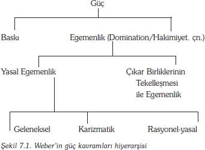
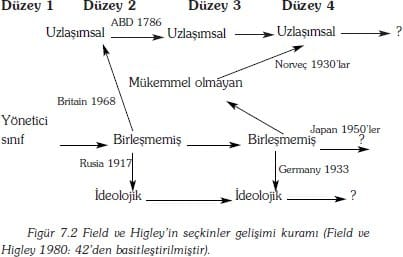
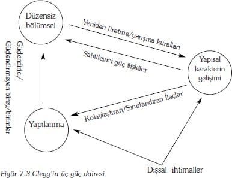

Bu bölüm, Ercan Şahbudak tarafından çevrilmiştir.
1960 ve 1970'lerde sosyoloji kuramlarında en yaygın tartışmalar, toplumsal bütünleşme ve toplumsal düzen[49] konusuna odaklanmıştı. Kuramcıların bir kısmı, toplumun, ortak normları paylaşan üyeler arasında varolan anlaşmalara göre kurulduğuna inanmışlardı; bu kişiler, uzlaşmacı kuramcılar olarak bilinmekteydiler. Diğer kuramcılar ise toplumda kolay kolay giderilemeyecek ayrılıklar olduğunu vurgulamakta ve toplumun baskı ile bir arada tutulması gerektiğine inanmaktaydılar; bu kişiler ise çatışmacı kuramcılar olarak adlandırılmışlardı. Önceki iki bölümde, kuramsal olarak normatif uzlaşılara yer verilmişti: 5.Bölümde ise normatif anlaşmaların gerçekten de toplum tarafından paylaşıldığını kabul eden işlevselci kuramlar incelenmişti; 6.Bölüm, kültür üzerineydi. Sözü edilen bölümde, paylaşılan normların bir ideoloji olarak kabul edildiği eleştirel yorumsamacı (critical constructionist) ve eleştirel yapısalcı (critical structuralist) kuramları incelenmiştir. Bu bölümde ise tartışmanın diğer bir yanı olarak görülebilecek alternatif durumları incelenmektedir. Yani, sosyolojik kuramlardaki baskı ve gücün durumu.
"Güç", gerek günlük hayatın, gerekse toplumsal bilimlerin daha nedensel uygulamaları içinde, çözülmemiş karmaşıklığın tehlikelerinin korkusunu duymadan, derin düşünmeksizin ve rutin olarak kullanılan bir kavramdır. Yaygın söylenişi ile, bizler, güç kavramını, "etkili konuşma" veya "mutlaklığı ortadan kaldırmak için mutlak bir güç kullanma" veya "tahtın ardındaki güç" veya "sendikal güç" gibi bağlamlarda kullanırız ve kullandığımızda neler kast ettiğimizi anlarız.
Bununla birlikte, sosyolojik kuram içinde bu kavramı bir yere yerleştirmeye çalıştığımız zaman, işi tehlikeye sokabiliriz ve bu durum, çeşitli hataların meydana gelmesine sebep olabilir. siyasi düşünürlerin görüşlerinde güç teriminin yükselişi ile ilgili bir takım soruları dikkate almak gerekmektedir. Örneğin, Lukes:
Güç bir mülkiyet ya da ilişki midir? Potansiyel ya da gerçek midir? Güç, bir kapasite midir? Ya da bir güç uygulaması mıdır? Kiminle ya da ne ile ona sahip olunur ya da icra edilir?: etmenler tarafından mı? (Bireysel yada kolektif mi?) veya yapılar ya da sistemler tarafından mı? Kimin üstünde veya neyin üzerinde uygulanılır: Tanımlanarak mı, maksatlı mı veya uygulamaları kısmen niyet edilmiş midir mi ya da edilmemiş midir? Tamamen ya da kısmen etkili olmalı mı? Ne çeşit sonuçlar onu üretir: Davranışları, siyasetleri, tercihleri, fikirleri ve ilgileri biraz değiştirir mi? Eksik yada tamamlanmış, geçişli ya da geçişsiz, dönüşümlü yada dönüşümsüz ilişkileri olan mıdır? Simetrisiz midir? Birileri tarafından uygulanan güç, diğerlerinin gücünün etkisini azaltır mı? (güçler birbirini götürür mü?) Veya uygulamaları gücün toplamını artırabilir mi yada koruyabilir mi? Şeytani midir, iyi kalpli midir? İtimat etmeli mi, baskı ya da kuvvet mi kullanmalı veya yoksun bırakma ya da müeyyide uygulama ile mi tehdit edilmeli (Ve, eğer öyleyse, güçlü olabilmek için grupların maliyetleri ve mükafatları arasında nasıl bir denge olmalıdır?) Kavramlar, sadece direnmenin yada çeşitli şekillerde baskının olduğu yerlerde mi kullanılır? Eğer öyleyse, çatışma açık mı olmalı yoksa gizli olabilir mi: açıkça belirtilen tercihler arasında mı olmalı ya da gerçek çıkarları (nasıl saptanacaksa) içerebilir mi? Davranışsal bir kavram mıdır? Öyleyse hangi anlamda? Nedensel bir kavram mıdır? (1978:633-4).
Lukes, "otorite" kavramına paralel nitelikte bir takım benzer sorular sormaya devam etmektedir. Diğer sorular takımı, güç ve otorite arasındaki ilişkiler ile ilgilidir.
Bu, bize sosyolojide gücün nasıl kuramsallaştığını anlatmaktadır:
• Güç, kuramsal gündemde temel bir konudur.- itibarlı hiçbir kuramcı bu konuya değinmeden yapamaz.
• Gücün anlamı ve kaynakları konusunda yaygın anlaşmazlıklar vardır.
• Lukes'un gösterdiği gibi (1978:633), bu, gücü kuramsallaştırdığımız zaman, toplumsal dünyanın nasıl işlediğine ilişkin hususları ifade ediyoruz demektir ki bu da bir dünya görüşünü ifade etmek demektir. Ve,
• Güç kuramlarının bir çoğu, aslında, onun nedenlerinin ve etkilerinin özünü anlatan kuramlardan çok, terimin düşünsel dışavurumlarına işaret etmektedirler.
Özetle, gücün kuramsallaştırılması, neredeyse bir yüz yıllık zaman sürecinde kelimenin anlamı üzerine yapılan tartışmalar sonucunda oluşturulmuştur. Güç konusu, bu nedenle, sosyoloji kuramlarının (toplumsal kuramların) itibarı için olumsuz bir etki yaratır. Çünkü, en temel konu üzerinde bir uzlaşma sağlamak için güçsüz bir görünüm sunmaktadır.
Daha önce söylediğimiz gibi, güç kuramları, yalnızca kavramsal tanımlar değillerdir, bunlar, ayrıca önemli görüşlerdir de. Bu görüşler, birbirini izleyen notlar halinde aşağıda belirtilmiştir:
1. Bazı toplumsal varlıkları (tek tek aktörler, kolektif aktörler veya yapıları) kapsayan güç, benzer varlıklar ve diğerleri için belirli sonuçlara sahiptir. Bu sonuçlar, toplumsal ve fiziksel çevreyi değiştirmeyi ve şeyleri tesir altına almayı ve şeylerin değişimini içerebilir ("güç kullanma"-power to- olarak bilinir). Ayrıca, başkalarının eylemlerini kontrol edebilen bir toplumsal varlığı da içerebilir (ki bu da "başkaları üzerinde güç kullanma" olarak bilinen). "güç kullanma" ve "başkaları üzerinde güç kullanma" diye oluşturulan görüşler, alternatif kuramsal pozisyonları temsil etmelerine rağmen, farklılık, sadece vurgudadır. Çünkü, her biri diğerlerini de içermektedir.
2. Güç, bir toplumdaki kaynakların dağıtımına ilişkin olarak özel bir ilişkiler ağı içinde ayakta durmaktadır. Bir çok kuramcı için güç, statü ve mülkiyet gibi bazı kaynakların dağıtımına indirgenebilir. Diğer bir çok kuramcı için ise güç, kaynakların kullanımını kontrol edebilen ve kendi hakkıyla ayakta duran kaynaktır.
3. Güç, belirli bir yoğunluk derecesi gösterir. Bazı kuramcılar için güç, tekçi bir yöntem içinde, modern toplumda kaçınılmaz şekilde yoğunlaştırılmış ve merkezileştirilmiştir. Oysa diğer kuramcılar ise gücü çoğulcu bir yöntem içinde, sürekli yarışan ve yaygın bir biçimde dağıtılmış olarak ele almış ve değerlendirmişlerdir.
4. Güç, insan ilişkilerinin hepsinin ya da genelinin içine girebilmektedir. Hem belirli düşünceler içindeki tüm ilişkilerin çözümleyici görünüşleri olduğu hem de ilişki grupları arasındaki transfer edilebilen kaynakların değiştirilebilir ve başkasına devredilebilir olduğu tartışılabilir.
5. Güç, insan teolojisi (erekselliği, çn.) ve niyetselliği ile yakından ilgilidir. Asıl sorun, bu şekilde sosyolojik kuramda gündem, birey ve yapı arasındaki temel çatlağın ne olduğuna geri döner. Güç, bir niyet meselesi ya da bir örgütün bilinçsiz bir kalıbı gibi görülebilir.
6. Gücün kullanımı ve uygulaması siyaset ya da devlet olarak adlandırılan bir toplumsal kurum içindeki temel uzmanlaşmaya doğru eğilim gösterir. Devlet ya da siyaset, diğer toplumsal birimlere göre belli bir farklılaşma ve özerklik düzeyi ile tanımlanmaktadır.
Sosyolojik kuramdaki güç tartışmaları için üç temel kaynak vardır: Marks'ın eleştirel yapısalcılığı; Weber'in yorumculuğu; ve işlevselcilik ile faydacılık temalarının her ikisinin de desteklediği Klasik Seçkin Kuramıdır. Modern güç kuramları temelde üç durum içinde birleşir ve bunlar, bu bölüm içinde yer almaktadırlar. Birincisi, devletin şeklinin, toplumun yönetimindeki baskın bir konumda olan ekonomik sınıf tarafından belirlendiğini savunan "eleştirel yapısalcılık" ya da "yeni Marksizm"dir. İkincisi, yönetici bir seçkin tarafından kendi rızaları ile yönetilen bir toplumu savunan "işlevselcilik" ve yorumsayıcılık temalarına dayanır. Üçüncüsü, daha çok faydacılığa yönelmiştir ve güç yapısının, kendi çıkarlarını gerçekleştirmek isteyen bireyler arasındaki çatışmalardan ya da uyuşmalardan ortaya çıktığını kabul etmektedir.
Temel Sayıltılar
Temel sayıltılar, sırasıyla "eleştirel yapısalcılık", "yorumsayıcılık" ve "işlevselcilik" olmak üzere üç temel durumda kendilerini göstermektedirler. Marks'ın eleştirel yapısalcı gücün versiyonu, gücü toplumun temelde biçimini belirleyen ekonomik ilişkilerin bir görünüşü gibi kabul eder. Weber, çeşitli şekillerdeki güçler arasındaki farkları kanuna uygun olma temeline göre belirtir. Klasik Seçkin Kuramına göre güç, örgütlerin içinde, özellikle hükümet örgütlerinin içinde, oluşan bağımsız bir kaynaktır ve bu da toplumun işlemesi için gereklidir.
Marks: güç, her yerde güç
Marks, temel anlamda, hiç güç hakkında yazmadı; oysa ki, yazdığı hiçbir şey güç kavramının sınırları dışında değildi. Ona göre, insan toplumlarının tarihi, güç mücadeleleri ve farklılıkları tarafından öyle doldurulmuştur ki gücün ayrıntılı bir şekilde tanımlanması gereksizdir.
Marks insanlık tarihini, maddi kaynaklar üzerindeki mücadele olarak görür. Maddi kaynakların güç kazanımı ile olan ilişkisi dolaylıdır. Daha fazla maddi kaynağa sahip olan, ötekileri kontrol hakkına sahiptir ve diğerlerini daha fazla kontrol edebilmek için daha fazla maddi kaynak gereklidir. Bu ilişki, tanımsal görünümdedir. – Nadir bulunan maddi kaynakların tekeli, bunlara gereksinim duyanlar ve sahip olamayanların itaat etmelerine neden olabilir ve güçü elde etmek için verilen mücadelenin en başta gelen mevkisi firmalar ve iş teşebbüsleridir. Bununla birlikte, Marks, ekonomik ilişkiler içinde oluşan maddiyat ve güç farklılıklarının, siyasi ve ideolojik arenada güç ilişkilerini nasıl şekillendirdiğini göstermeye çalışmıştır. Bu genel yönelim içinde güç, bireylerce değil, sınıflarca ve gruplarca uygulanıp tecrübe edilmiştir.
Güç farklılaşmasının en uç seviyesi, kapitalist toplumlar içinde yaşanmıştır. Kapitalist üretim biçiminde mülkiyet, başkasına devredilebilir ve özelleştirilebilir niteliktedir ve işçi sınıfı tamamıyla sözleşme yaparak bağlanabilmektedir. Kuramsal olarak, mal biriktirilmesi ve emeğin sömürülmesi için gerekli olan imkanlar sınırsızdır. Bununla birlikte, emek ve artı ürün konusunda yaptığı çalışmalarda bu süreçlerin sonuçlarını daha ayrıntılı bir şekilde inceleyerek; Marks gücün son derece yoğunlaşmış olduğunu göstermiştir.
Bu sayıltıdaki temel, öncül değerin emek (emek değer, çn.) kuramıdır. Bu kuram, malların, tamamen işgücünün harcanması sonucunda oluştuğunu ileri sürer, iş gücü ile nesneleşmişlerdir, bu yüzden, herhangi bir malın değeri, onun üretimine katılan tüm işgücünün toplamının değeridir. Basit mal üretimi diye bilinen, her bir işçinin üretimde bulunduğu ve ürün üzerindeki her türlü tasarrufa sahip olduğu kurgusal bir sistemde, herkes ürünün emek değerini bilmektedir ve gerçek emek değerin dışında bir malı ne takas etmek ne de başka hiçbir şeyle değiştirmeyecektir. İşçiler, ürünlerini, içine koydukları emeklerinin değerinden daha azına değiştirmeyeceklerdir.
Kapitalist üretim biçiminde, mallar pazarda para ile alınır ve satılırlar. Basit mal üretimin tersine, burada ücretli-işçiler, emek-değerinden daha azını kabul etmişlerdir. Marks, bu ilke ile kurulan değişim sistemini tartışmış ve bir malı üreten emekçinin maliyetinin toplamının beslenme, giyim, ailesinin ve kendisinin barınma giderleri; artı, beceri kazanma ve eğitim giderlerinden oluştuğunu ileri sürmüştür. Bu toplam, iş gücünün yeniden üretim maliyeti/fiyatı olarak adlandırılır. Bununla birlikte, emekçi, sadece bu fiyatı karşılayacak belirli bir zaman aralığında çalışmak ister. Bu yüzden, bir kapitalist, işçiyi bu miktardan daha uzun bir süre çalışmaya zorlarsa, onlara iş üretim gücünü karşılayacak yeterli miktarı ödemek zorundadır, daha yüksek değerde malların satışı, kapitalist tarafından akılda tutulması gereken bir üretim fazlası sağlayabilir.
Çalışma gücü değerinin günlük ya da haftalık ödenmesi sonucunda, kapitalist bütün bir gün ya da bir hafta esnasındaki çalışma gücünün kullanım hakkını eline geçirmiştir. İşçilerin çalışma süreleri artmış ve ücretlerini de yenilemek gerekmiştir. Ya da o nedenle, işçiler daha fazla çalışmak zorunda kalmışlardır çünkü daha fazla emek, daha fazla ürün ve daha fazla değer yaratmaktadır.
Artı değerin oranı, bütün diğer koşullar aynı olduğunda, kapitalist için sarfettiği fazla zaman veya emek konusundaki performanslarına ve iş gücü değerinin yeniden üretimi için gerekli olan bir çalışma gününün bölümleri arasındaki uygunluğa bağlı olacaktır. Bu nedenle işçi sadece emek gücü değerini yeniden üreterek çalışma gününü uzatma oranına bağlı olacak ya da iş el değiştirecektir.(Marks 1982:35)
Mallar için alınan değişim değerinden daha aşağı ücret ödeme uygulaması, sermayenin kâr biçimini alarak süreklilik arz eden artı değerlere dayanarak sermayeyi artırma etkisine sahip olmaktadır. Üretim araçlarının özel mülkiyeti, o nedenle, gittikçe artarak daha belirgin ve yoğun olmaktadır. Sahiplik yoğunlaştıkça, güç de yoğunlaşmaktadır.
Ücretli işçilerin artı değeri çoğaltmaya devam etmelerini güvence altına almak için, emek sürecini kontrol etmeye yönelik sürekli bir çaba olmalıdır, yani, daha uzun çalışma saati, daha fazla uzmanlaşma, beceriye/hüner uygulamalarının azalması, ve teknolojiye duyulan ilginin artması, yönünde, işin sürekli olarak yeniden yapılandırılması gerekmektedir. Böylece işçiler, üretim sistemi içinde bireyselleşmiş ve kontrol edilebilen nesnelerden oluşmuş homojen bir yığınına dönüştürürler ve kapitalist sömürüye karşı koyamazlar.
Değer emek kuramı ile ilgili olarak mantık yönünden bir takım sıkıntılar vardır, bu, en belirgin şekilde, Marks'ın emek değerini değişim değeri (fiyatı) ile eşitlemesinde görülebilir. Açıktı ki, bir ürünün fiyatına ilişkin gizli hiçbir şey yoktur – sadece arz ve talebe bağlıdır.[50] Beceri farklılıkları konusunda ve Marks'ın her hangi bir teknolojik rejim altındaki emeğin eşit değerde olduğu varsayımı hakkında çok ciddi şüpheler de olmalıdır. Bununla birlikte, maddi kaynakların, güç farklarının kaynağı olduğu fikrine karşı çıkmak zordur.
Marks'ın devlet ve ekonomik sınıf gücü arasında kurduğu ilişkinin analizi çok daha problematiktir. Jessop'un (1982:9-20) belirttiği gibi, Marks ve Engels konu üzerinde birleşmiş olmaktan uzaktılar. Buradaki asıl önerme, siyasi üst yapıdaki değişmelere paralel olarak ekonomik temelde gelişen bir "temel-üstyapısal" modeldir. Devlet içinde görülen parti temelli siyaset mücadeleleri hakiki sınıf antagonizminden (zıtlığından/çatşmasından) dikkati başka taraflara kaydıran yanılsamalardır. "Çatışma, daima bütün bir toplumsal yapının temelinin saklı olduğu, üreticilerin üretim araçlarındaki doğrudan ilişkileridir ve bu durum, egemenlik ve bağımsızlık ilişkisinin modern siyasi biçimidir, kısaca devletin yerini tutan özel biçimdir" (Marks 1982:37).
Bununla birlikte, genel olarak, bu görüş bir özettir ve hakiki eylemlerin ifadesinden ziyade, Marks ve Engels'teki yönlendirici yapısal ilkelere işaret etmektedir. Marks ve Engels hiçbir yerde, devlet ve ekonomi arasına mükemmel bir şekilde su yüzüne çıkmış (epiphenomenal) bir uygunluk olduğunu ileri sürmemişlerdir. Dahası, bu ilişki, bir "ayrışma ve yıpratma" ilişkisidir ve şu konumda durmaktadırlar "farklı devlet şekilleri, farklı üretim biçimleri gerektirmektedir ve devlet gücünün doğası ekonominin değişen ihtiyaçlarınca ve ekonomik düzeydeki sınıf güçlerinin değişen dengelerince, belirlenmektedir" (Jessop 1982:10).
Weber: Otorite Temelli Kuramı
Çoğu konu da olduğu gibi, Weber, güç konusunda da açıkça Marks'ın güç görüşünün karşısında bir konum alır. Marks, için güç, zorunlu olarak sistemden çıkar ve gereksizdir (epiphonomenal). Fakat Weber için güç/iktidar, temel bir kavramdır ve güç kavramını daha çok detaylandırılmış ve özellikleri açıkça belirtilmiş halde kullanır.[51] Bekleneceği gibi, Weber, gücü daima amaçlı edilmiş insan eylemlerinin bir sonucu olarak anlamaktadır. Güç , insanların diğerleriyle nasıl ilişki kurduklarını gösterir. Weber, gücü şu şekilde açıklamaktadır: güç, " bir aktörün, dirence rağmen kendi isteklerini yerine getirebilme ihtimalidir ki bu ihtimalin dayandığı temeli hiç de hesaba katmaz" (1978:53)[52] Bunun için, güç kavramını "bir bireye diğerlerin kontrolünü veren, kavranabilir bir yığın koşulu ve bireylerin bütün kavranabilir niteliklerini" sosyolojik kucaklayabilmek olarak değerlendirmektedir. Bu tek, kuramsal genelleme, Weber'e gücün tiplerini ve alttiplerini betimleyebilmek için özelliklerin kavramsal bir hiyerarşisini yapma fırsatı vermektedir. Güç terimlerinin bu hiyerarşisi ve gücün alttipleri şekil 7.1. de belirtilmiştir.

Weber'in başlıca ilgisi, yönetenlerin rızasını temele almış gibi görünen güç biçimleri üzerinedir ve bu yüzden, analizine bu tipin belirttiği güç şekli ile işe başlar. Bu bir egemenliktir (domination, hakimiyettir çn.) (Herrschasft)[53] ve şöyle tanımlanır: "belli bir içeriğe sahip bir emre, insanlardan oluşmuş belli bir grupça itaat edilmesi olasılığı" (1978:53). Bu vurgunun temel nedeni, emre dayalı gücü, ister kazara ve arada sırada meydana gelen ister biçimsel olarak düzenlenmiş olsun, doğrudan zorlamaya dayalı güçten ayırt etmektir.
Bununla birlikte, egemenliğin tanımlanması, Weber'in amaçları göz önünde bulundurulursa, yeteri kadar belrigin değildir. Bunun için, "çıkar birliklerinin tekelleşmesi açısından" (daha özel bir ifade ile tekelleşme yüzünden) ve "otoriteden kaynaklanan egemenlik" yani "emir verme gücü" ve "itaat etme sorumluluğu" gibi güç ayrımları da yapmaktadır (1978:943). Böylece, çok dikkatli bir şekilde, yasal egemenlik ile yasal olmayan egemenlik arasında bir ayrım yapar ve böyle davranarak, gücün kaynakların kontrolünden gelebileceğini teslim eder. Bununla birlikte, belirttiği gibi yasal otorite ile daha çok ilgilidir:
Yönetici ya da yöneticilerin ilan edilen iradelerinin (emirlerinin) (yönetilen) bir veya daha çok kişinin davranışlarını etkilemesi demek olan, ve gerçekten, toplumsal olarak bir dereceye kadar kabul edilebilir eylemleri, sanki yönetilenler emirin içeriğini salt emir olduklarından dolayı kendi eylemlerinin düsturu (maxim) haline getirecek şekilde, oluşturdukları bir durumdur bu (1978:946)
Yönetilenler, olası bir çok güdülerden dolayı emirleri kabul edebilirler bu güdüler: görev duygusu, korku, sıkıcı gelenekler/adetler, kişisel çıkar, duygusal ya da ideal dayanışma güdüsü, olabilir (1978:946-7). Bununla birlikte yönetilenler, yönetenlerin emir verme hakları olduğunu ve bunun da yasal olduğunu kabul etmedikleri sürece, yani bu emirler değerler bağlamında yer bulmadıkça, bir egemenlik sistemi, her zaman istikrarlı bir şekilde devam etmeyecektir. Weber'e göre, emirler, yöneticiler ile yönetilenler arasında paylaşılan 'geçerli' normlar (1978:946) olarak kabul edilir hale gelmelidir.
Weber'in düşünceleri bu noktada sadece tipolojik olmaktan ziyade, kuramsal olarak ilerlemektedir. Talep edilen meşruluk türü, bir dizi diğer toplumsal uygulamaları da etkileyecektir: örneğin, egemenliğin nasıl uygulanacağı, kendisine nasıl itaat göstereceği, bu meşruluğu ne tür bir yönetici yapısının garanti altına alacağı gibi konulardır bunlar. Bu nedenden dolayı, Weber, şu anda ünlü olan yasal egemenlik tipolojisini oluşturmuştur. Önemli ayırt edici boyut, meşruluğun nasıl bir temelde talep edildiğidir. Weber, (1978:215) olası üç temel kurmuştur:
• Geleneksel egemenlik, aslında statü temelli tabakalaşmanın olduğu toplumlarda görülür. Otoriteye sahip (yetkiyi elinde bulunduran, çn.) bireyler, doğumlarıyla birlikte kendilerine atfedilen karar verme hakkını tanıyan özel bir statüyü miras alırlar. İtaat edenler ise buna benzer şekilde sadakat durumunu ait olma duygusu içinde miras alırlar. iki statü arasındaki ilişki, "daima bu şekilde gerçekleşmiş olduğundan", üsttekilerin emirleri kabul edilir. Bununla birlikte, daha üstekilerin otoritesi sınırsız değildir. Otorite, kurulu alışılagelmiş haklar ile uyum içinde olmalıdır. Geleneklerden bir kopuş ilişkinin meşruluğunu tehdit edecektir.
• Karizmatik egemenlik, toplum liderini diğerlerinden farklı bir yere koyan ve ona kişisel özel güç ve ödüller vererek meşrulaştırdığı bir türdür.
• Rasyonel-yasal egemenlik iki öğeye dayanarak meşruluğunu kazanır: birincisi, hukuksal öğedir ki burada alttakiler üsttekilerin de uyacaklarını umdukları kural ve yasaları kabul etmektedirler. İkincisi, rasyonel öğedir ki burada da belirli yakın amaçları gerçekleştirmede randımanlı ve etkili kurallar vardır.
Weber, bu iddiaları ileri sürmesi ile ortaya çıkan güç yapılarının çeşitlerini tartışmaya devam etmektedir. Bunlardan en çok bilineni, bürokratik idari kadronun artmasına sebep olan, rasyonel-yasal otoritenin saf tipidir (pure type) ve bu aşağıdaki özellikleri gösterir:
• Rasyonel yasal otoritenin etkinlikleri kurallar tarafından yönetilir.
• Özel bir yeterlilik alanına sahiptir.
• Hiyerarşik olarak düzenlenmiştir.
• Üyeleri, kendi meslekleri için özel bir şekilde eğitilmişlerdir.
• Görevlileri üretim araçlarına sahip değillerdir.
• Kendi işlerine sahip değillerdir, fakat işten çıkartılabilirler.
• Otoritenin eylemlerinin kaydı dosyalarda tutulur
(Weber, 1978:218-20).
Bürokratik idari kadro, gücün kullanımının yasallığına ve özel durumlarda kullanıldığına dayanarak, hukuksal normların kişisel olmadıklarını ve soyutlamalar olduklarını vurgularlar.
Buna karşın, geleneksel egemenlik şu üç örgütsel yapıdan birine hız kazandırmaktadır: bunlar, feodalizm, sultanizm, patrimonyalizm veya patriarchalism'dir. Weber'in asıl ilgisi moderniteden hemen önde gelen, patrimonial bürokrasi üzerinde yoğunlaşmıştır. Patrimonial bürokrasi, gücün asiller zümresince kullanıldığı, yöneticiliğin mutlak ve paylaşılmamış olduğu bir sistemdir. Asillerin sadaktı, önemli maddi kazançlar sağlama ve işyerlerine sahip olma hakkını elde etme gibi çıkarların garanti altına alınması ile olmaktadır. Aynı şekilde, karizmanın kuramsal önemi, bir taraftan, otorite elde etmeye yönelik yerleşik talepleri altüst etme kapasitesinde, diğer taraftan ise yeni otorite taleplerinin saptanması için bir bağlam sağlama kapasitesinde yatmaktadır.
Weber, yasal egemenlik tipolojisinin sadece bir ideal tip olarak oluşturulduğu ve bir de, herhangi bir istikrar tedbiriyle ayakta durabilen saf bir örneği olmadığı hakkında uyarılarda bulunmaktadır. Ampirik durumlar daima egemenlik tiplerinin karışık bileşimleridir. Bununla birlikte, Weber, örgütlerin derecelendirilmesinden ziyade, Batı toplumlarının gelenek taleplerine dayalı güç/iktidar yapılarından (özellikle patrimonialism' den), rasyonellik taleplerine dayalı toplum biçimlerine dönüşümü ile ilgilenmiştir. Karizmatik bireysel özelliklere yönelik taleplere dayalı güç yapıları sadece, geçişi/değişimi sonuçlandırmaya tesir etmesi bakımından ilginçtir.
Klasik Seçkincilik: Güç Komploları
Tamamen bağımsız ve egemen siyasi tabakalaşma sistemini tartışan köklü bir gelenek vardır. Bu geleneğin içinde iki temel tabaka tanımlanabilir: bunlar, seçkinler ve seçkin olmayanlar ya da yığın/kitle'dir. Seçkinler, orantısız bir emretme gücü olan toplumsal gruptur. Meisel (1962) seçkinlerin temel unsurlarını şöyle sıralamaktadır (bu unsurlar üç C'ler olarak bilinmektedir, yani; group consciousness, coherence, conspiracy).
• Grup Bilinci: Seçkin grubun üyelerinin, seçkinlerin varolduklarının ve kendilerinin de onların üyesi olduklarının, farkında olmaları gerekmektedir;
• Tutarlılık: Her bir grup bireyi, grubun çıkarları peşinde koşarken uyum içinde hareket etmelidirler.
• Gizli bir gündem: Grubun çıkarlarını daha ileri götürebilmek için, ortak stratejilerin evrimi ve grup üyeleri arasında bir fikir alışverişi olmalıdır.
Seçkinler grubu, bu nedenle, bilinçli olarak oluşturulan bir yapıdır. İlk seçkin kuramcıları olarak Pareto (3. kısımda görülebileceği gibi), Mosca ve Michels'den (Parry 1969: 30-54; Bottomore 1996) bahsedebiliriz.
Pareto (1966) kuramını, ilginç fakat son zamanlarda gözden düşen Toplumsal Davranışcı (3. kısımda ayrıntılı olarak belirtilmiştir) bir temel üzerine kurmuştu. Pareto'ya göre insan davranışı iki unsurdan meydana gelmektedir: Türevler, toplumsal hayatı olası kılan her türlü üstü örtük ya da açık olan herşey, eylemleri yasallaştırmaya çalışan ve akılcılaştıran düşüncelerdir; ve Tortular, aktörün hakiki bir şekilde eylemlerini belirleyen temel içgüdü yada güdülerdir. Güç/iktidar oluşumu ile ilgili birbiri ile çelişen iki tür tortu vardır ve bunlar tarih boyunca değişmeden kalmışlardır. Birincisi "birleştirme içgüdüleri"dir; ki bu da yeni toplumsal gruplaşma ve yeni objeler yaratma eğilimleri anlamına gelmektedir. İkincisi, "varolanın (aggregates) devamını sağlayan içgüdüler"dir ve daha önce kurulmuş olanları devam ettirme eğilimi anlamına gelmektedir. Her bir bireyde bu tortu çeşitlerinin ya birinci türü ya da ikinci türü ağır basmaktadır.
Birinci tortunun ağır bastığı insanlar, kendilerini takip etmeye başkalarını ikna edebilen, kurnaz ve anlayışlı spekülatörlerdir (Machiavelli'nin daha önce belirttiği "tilkiler" ile aynı anlama sahiptir). İkinciyi vurgulayanlar ise rantiye(ci)lerdir ("arslanlar") ve bu kişiler tutucu ve hayal gücünden yoksun olanlardır. Seçkin olmayanlar hemen hemen aslanların tamamından oluşur, fakat seçkinler hem aslanlardan hem de tilkilerden meydana gelir ve aslında her ikisinin de birlikteliği gerekmektedir. Yönetim uygulamalarının niteliği, sert, baskıcı, muhafazakar aslanlar ile ikna edici, demagojik/halk avcısı ve yenilikçi tilkiler arasındaki mücadele sonunda hangi grup ağır basarsa onun tarafından belirlenir. Bu mücadele, seçkin olanlar ile seçkin olmayanlar arasındaki dolaşıma ya da hareketliliğe yön verir, fakat Pareto'nun bu görüşlerini desteklemek için ileri sürdüğü kanıtlar, pek inandırıcı durmamaktadır.
Seçkinlere ilişkin, daha az renkli olmasına rağmen daha faydalı açıklamalar Mosca tarafından (1939) yapılmıştır. Pareto gibi Mosca'da toplumların kaçınılmaz şekilde küçük gruplar tarafından yönetildiği görüşündedir. Bu varsayım, küçük bir grubun büyük bir gruptan daha kolay bir şekilde organize edilebileceği ve halk kitleleri kontrol edilmek isteniyorsa, küçük grubun gücünü devam ettirmek için stratejik ve tutarlı olarak eylemde bulunması gerektiği görüşüne dayanmaktadır. İki çeşit seçkin yapısı vardır: otokratik/baskıcı-aristokratik olarak adlandırılan seçkin yapısında otorite, yukarıdan aşağıya doğrudur ve seçkinler, kendi kendilerine iş veririler (kendi kendilerinin patronudurlar, çn.); liberal-demokratik olarak adlandırılan seçkin yapısında ise yöneticilere seçkin olmayanlar tarafından yönetme yetkisi verilir ve seçkin olanlar ile seçkin olmayanlar arasında bireylerin dolaşımı söz konusudur. Mosca, seçkinlerin dolaşımı konusunda, Pareto'dan daha ihtiyatlıdır; genel bir eğilimden ziyade, bir ihtimal olarak değerlendirmek gerektiğini ileri sürmektedir. Bununla birlikte, bu hareketlilik türünün Batı toplumlarında arttığına işaret etmektedir.
Weber'in öğrencisi Michels (1958; Parry 1969:30-54; Bottomore 1966) Pareto ve Mosca tarafından oluşturulan seçkinler dolaşımı görüşüne itiraz etmektedir. Bunun yerine "oligarşinin demir yasası" görüşünü geliştirmiştir. Seçkin üyeliği, örgütleri kontrol edebilmeye dayalıdır, aslında seçkin-yığın farklılaşması sadece bir bütün olarak toplumu değil, aynı zamanda toplumu düzenlemeye çalışan örgütleri de kapsamaktadır. Bu örgütlerin (sendikalar, şirketler, siyasi partiler, v.b.)" sınırsız iç uyum sorunları ve amaçlarını gerçekleştirmek için teknik bakımdan zorlukları vardır. Bu gibi şeyleri idare etmek için, uzmanlık gerekir ve uzmanlık doğrudan liderlik tecrübesi ile kazanılır. Aslında, liderlik tecrübesi de, sadece bir kaç kişiye açık durumdadır. Sonuç olarak, Michels, "bir örgütten (organizasyondan) bahsedildiğinde aslında oligarşiden bahsedildiğini" söylemektedir. Yani, oligarşi, demokratik diye adlandırılan örgütler içinde gelişmektedir, bürokrasi, kontrolü belli bir azınlığa vermektedir ve bu azınlık da örgütsel uzmanlığı tekelleştirerek, kendi konumunu sağlamlaştırmak ve korumak istemektedir.
Eleştirel yapısalcılık:
Mülk sahipliğinden kaynaklanan güç
Bizim incelediğimiz modern birinci gruptaki kuramcılar, Marks'ın gücün, maddi yapıların sahipliğinden kaynaklandığına ilişkin düşüncelerinden hareket etmektedirler. Bu düşüncenin iki unsuru vardır: ilk olarak, sadece gücün gerçek biçimi, ekonomik sınıflar arasında, mülkiyet sahipliği üzerinde bir mücadeleyi gerekli kıldığı iddia edilmektedir. Daha sonra ise devlet ya da siyaset gibi açık güç şekillenmelerinin bu sınıf mücadelesini azaltabileceği (ya da az ya da çok bu çerçevede açıklanabileceği) ileri sürülmektedir. Birinci grup kuramcılar, bu ikinci unsurun üzerinde yoğunlaşmışlardır ve 1950'ler ve 1940'lardaki Amerikan eleştirel kuramlarının yaptıkları katkılar ile uyum içerisindedirler.
Amerikan radikal solu: askeri-sanayi bakımından ortaya çıkan karmaşıklıklar
Burnham'ın "Yönetsel Devrim"i (The Managerial Revoloution) (1941) adlı kitabı, Marksizm ile seçkincilik kuramını birleştirmeye yönelik ilk girişimdir. Marksist kurama göre toplum, üretim araçlarına sahip olanlar (yönetici sınıf) tarafından yönetilir. Burnham, bu kuramın artık demode olduğunu çünkü, şirket hisselerinin, bütün nüfusça sahip olunabileceği koorperatif kapitalizmin geliştiğini kabul etmektedir. O nedenle, bir küçük ölçekli burjuva yönetici sınıfından bahsetmek zordur. Burnham, üretim araçlarına yasal olarak kimlerin sahip olduğu sorunundan, onların kimlerin kontrolu altında olduğu sorunun daha önemli olduğunu söylemiş ve üretim araçlarının kontrolünün yöneticiler tarafından gerçekleştirildiğini savunuş ve böylece sorunu çözmüştür. Aynı şekilde, devlet içinde, siyasetçiler, siyasi süreçlerin kontrolünü uzman bürokratik yöneticilere bıraktılar. Özel ve kamu sektörü yöneticileri arasındaki bir birleşme, geleneksel burjuvazinin yok olmasını hazırlayacaktır. Toplum, devlet ve özel sektörün her ikisinin içindeki, iyi yetişmiş teknik uzmanlardan kurulu yönetsel seçkinler tarafından yönetilecektir.
Benzer bir düşüncede Mills'te (1959;1970) görülebilir. Micheles gibi, o da, gücü, örgütlerin bir görünüşü/yanı yada kendi terimleriyle kurumların bir görünüşü olarak görür. Mills'ın sunduğu ilginç bir öneri de, bir kurumun diğerlerinden bağımsız olmadığı ve seçkinlerinin birbirine nüfuz ettiğidir. Kısaca, çağdaş toplum, tek, bütünlenmiş ve birleştirilmiş bir seçkinler grubu tarafından yani bir güç seçkileri tarafından yönetildiği söylenebilir.
|
C.Wright Milles (1916-1962) |
| Mills alışılmış bir kariye sahip ama alışılmadık bir kişilikti.Waco, Teksas'da doğdu. Teksas Üniversitesinde yüksek lisans yaptı. Profesörlüğünü Wisconsin Üniversitesinde aldı. Göreceli kısa ömrünü sosyoloji profösürü olarak New York Üniversitesinde geçirdi. Ateşli, sert ve savaşçı birisiydi. Amerikan toplumunun bütün sosyolojik öğelerine kafa tuttu. İnanılmaz bir cesarete sahipti ve radikal bir sol zihniyete. |
|
Kaynak: Penguin Dictionary of Sociology (1984, Milles, C. Wright), Ritzer (1992:211) |
Toplumda bir güç/iktidar seçkinlerinin olduğu iddiasını, İkinci Dünya Savaşı sonunda Amerika toplumu üzerinde yaptığı incelemeler üzerine oturtmuştur. Bunun kanıtları şunlardır: birinci kanıtı, politikaların artık, uygun alternatif politikaların genel provasından ibaret olmadığı, fakat halkın genelinin ihtiyaçlarını karşılamaya çok istekli gibi görünen şirket temelli çıkar grupları arasında cereyan ettiğidir. İkinci kanıtı ise gerçek yada hayali düşmanlar karşısında devletin müdafaasına yöneltilmiş askeri örgütlerin büyümesi ve artmasıdır ve üçüncü kanıtı ise büyük şirket (corporate) temelli ekonominin ağır bir şekilde askeri üretime doğru yönlendirilmiş olmasıdır.[54] Güç seçkinleri, devletin askeri konumunun devam ettirilmesine odaklanmış paylaşılan çıkarlara sahip birleşik bir yönetici gruptur:
Güç seçkinleri, kazanılmış bağımsız haklar, dürüstlük ve hüner gerektiren herhangi bir gerçek devlet memurluğunun olmayışından, profesyonel savaş zenginlerinden, şirket başkanlarının apaçık siyasi emirlerinin artışından ve profesyonel siyasetçilerin güçlerinin azalmasından, son zamanlarda ortaya çıkan şiddet araçlarını kontrol edenlerle, belli başlı üretim araçlarını kontrol edenler arasındaki çıkarların uyuşması ile biçimlendirilmiştir (1970:246).
Bu analizde, güç, ekonomik kaynakların kontrolüne indirgenmiştir, özellikle, soğuk yada sıcak savaşın bitirilmesine yönlendirilmiştir. Bu kuram, süper devlet maceracılığının değişik çeşitlerini uygulamaya çalışan, eski SSCB, Çin ve ABD gibi toplumlar için uygun durmaktadır, fakat tüm toplumlara genellenebileceği ifade edilecek olunursa, sonucu çok daha şüpheli/belirsiz olur.
Poulantzas: güç iş başında
Burnham ve Mills, Marksist düşünceyi, seçkinci düşünce ile birleştirmeye çalışırlarken, Poulantzas'ın güç kuramı, Marksist düşüncenin maddeci ve yapısalcı yanını üzerinde daha açık ve daha doğrudan durmuştur (1973: 104-14; 1978:146-53;1986). Bundan dolayı, Poulantzas kuramı, Althuser (4. Kısımda görüleceği gibi) ile doğrudan ilişkilidir. Poulantzas, gücü şöyle tanımlayarak işe başlamaktadır: güç "bir toplumsal sınıfın kendi özel çıkarlarını gerçekleştirebilme kapasitesi"dir (1986:144). Bir sınıfın sahip olduğu gücün miktarı, sınıf mücadelesi içindeki göreli başarılarına bağlıdır. Sınıflar, sınıflar arasındaki ilişkiler sisteminin içinde bulundukları yerlere göre ya pozitif güç (hakimiyet) ya da negatif güç (boyun eğme) konumlarına yerleştirilirler. Poulantzas,a göre, güç "tam manasıyla "ilişkiseldir" çünkü, "belirli kişiler tarafından işgal edilen maddi mevkiler ilişkisel bir sistem"den meydana gelmiştir (1978:147).
|
Nicos Poulantzas (1936-79) |
| Poulantzas 1957'de Atinada Hukuk derecesini aldığı yerde doğdu (doğ.1936). 1960'da Parise taşındı. 1964'de Sorbonne'de doktorasını aldı. Sonrada köminizme doğru yöneldi ve Marksist düşüncenin gelişiminde yönlendirici bir senbol oldu. Benimsediği ülkenin dilinde yazdı. Ölümü ise kendi elinden oldu. |
|
Kaynak: Ritzer (1992:301) |
Poulantzas'ın güç düşüncesindeki en temel kavramsal zayıflığı, sınıf çıkarları tasarımıdır. Sınıflar insanların arzu ve taleplerinden bağımsız oluşumlardır ve bundan dolayı, sınıf çıkarları, psikoloji ya da rasyonellik gibi bireysel düzeylerinin içine yerleştirilemez. Herhangi bir sınıfın çıkarları, toplum üzerinde uyguladığı etkinin, bir toplumsal kuvvet kapasitesinin uzantısı olarak ortaya çıkmaktadır. Bir başka deyişle, nesnel sınıf çıkarları, diğer sınıflar tarafından onun üzerine konan sınırların geriye itilmesinde yatar. Poulantzas, böylece, gereksiz bir şekilde sözleri tekrarlayarak tartışma yapıyormuş gibi görünür. Şöyle diyor: "güç, bir toplumsal sınıfın kendi gücünü artırma kapasitesidir". Kendi deyişiyle, "bir sınıfın nesnel çıkarlarını gerçekleştirme kapasitesi, yani sınıf güçünü artırma kapasitesi, karşıtının kapasitesine yani gücüne bağlıdır" (1986:151).
Sınıflar üç alanda güç kullanırlar, bunlar: ekonomik, siyasi ve ideolojik olarak sıralanabilir. Ekonomik alan, diğer iki alanı meydana getirir ve biçimlendirir, fakat ekonomik alanda bir sınıfın özel güç kapasitesinin olması, diğer iki alanın her hangi birinde de özel bir güç kapasitesinin olacağı anlamına gelmez. O halde, ideolojik alanda, profesyonel bir orta sınıf fraksiyonunun belirleyici olduğu, işçi sınıfının sosyal demokrat bir parti aracılığı ile devlet üzerinde hakimiyet kurduğu ve burjuvazinin ekonomide belirleyici olduğu, gibi durumları düşünmek oldukça normal olacaktır. Bu durum Pulantzas'ın kuramında devlet ile ekonomi arasında "göreceli özerklik" olarak nitelendirilen özel bir ilişkinin doğmasına sebep olmuştur, yani devletin "göreli özerkliği". Devlet, ne gücün bağımsız bir kaynağı ne de burjuvazinin bir aracıdır. Üstelik, ekonomik arenadan türeyen kapasitelerin/güçlerin mücadele alanına taşındığı bir arena haline gelmiştir. Devletin maddi güç mücadelelerini yansıttığı bir durum, örneğin, ücretli işçilerin, devletin idari sistemini, adliyeyi yada polisi etkileyememesidir. Fakat, aynı ücretli işçilerin, devleti burjuvaya teslim etmemeleri mümkün ve gereklidir de. Gerçekten de, işçi sınıfının atacağı ilk devrimci adım, devleti ele geçirmek olmalıdır.
Devletin göreli özerkliği
1970'lerde Marksist analizdeki tartışmaların en çok üzerinde durdukları konu, devletin özerkliği sorunuydu. Poulantzas'ın yapısalcılığına karşı çıkan düşünceye "araçsalcılık-instrumentalism" adı verilmektedir. Bu da, Marks ve Engels yorumlamalarına dayanmaktadır. Jessop bunu şu şekilde tanımlamakta: "en az gelişmiş biçimi içinde araçsalcı yaklaşım, sadece, devletin bağımsız ve egemen bir siyasi özne olmadığını, fakat değişik amaçları elde etmek için, ondan elde edilebilecek bütün çıkarlar gözetilerek, bir tür yönetim ve baskı aracı" olduğu iddiasındadır (1982:12). Devlet böylece, sınıf fraksiyonları ve sınıflar arasındaki mücadelenin yaşandığı bir alan olarak ve kapitalist üretim biçiminden önce var olan boş bir bina iskeleti gibi izah edilmektedir. Bununla birlikte kapitalizm altında, burjuvazi, bu tür mücadelelerde üstünlüğü elinde tutar. Burada örneğin, kabine, Marks ve Engels tarafından burjuvaziyi yöneten bir komite olarak tanımlanmaktadır. (Jessop 1982:12)
Modern zamanlarda araçsallık fikrinin temel savunucusu, Miliband olmuştur (1969; 1983). Miliband'a göre; devlet ile ileri kapitalist toplumlardaki egemen sınıf arasındaki ilişkinin gerçekçi ve doğru bir modeli, birbirlerine bir çok bağ ile bağlanmış fakat yine de kendilerine özgü farklı ilgi alanlarına sahip, ayrık ve farklı iki güç arasındaki bir ortaklıktır (1983:72). Miliband'ın projesi, siyasi hayattaki liderler ile iş hayatındaki liderler arasında ki bağlantıları göstermektir. Bu bağlantıları çeşitli şekillerde kurmaktadır ve şunları belirtmektedir:
• İş liderleri, hem devlet bürokrasisinin üst seviyelerini hem de siyasi liderlik rollerini kolonileştirmektedirler (kendi alanlarına çekmektedirler, çn.).
• Ortak toplumsallaşma tecrübelerinden dolayı, siyasi liderlerle ortak değerleri paylaşmaktadırlar.
• Siyasi liderler ile şirketlerin yönetim ve komisyon üyeliklerini paylaşmaktadırlar.
• Birbirlerine danışmaktadırlar.
• Siyasi ve iş liderleri aynı, dinlenme ve eğlenme amacı ile gidilen dernek ve klüplere üye olmaktadırlar.
• İş liderlerinin aileleri ile siyasi liderlerin aileleri arasında kız alınıp verilmektedir.
• Siyasi partilere finanssal destek sağlamaktadırlar.
• Bir bütün olarak devlete vergi desteği sağlamaktadırlar.
İş liderlerinin çıkarları, o nedenle, eylemlerinin doğrudan sonuçları olarak, devletin işlemesinde zirvede yer almaktadır.
Foucault: güc'e ilişkin konuşma
Yukarıdakiler yani gücün maddi yapılara indirgenebileceğini kabul eden düşünceler, paradigmatik yapısalcı tartışmalardır. Bununla birlikte, 4. bölümün sonuna doğru, yapısalcılığın aşamalı olarak, post-yapısalcı yönelim lehine parçalara ayrıldığını belirttik. Post-yapısalcı yönelimde gözlemcinin görevi, anlamlı yapıların tarihsel kökenini saptamak ve görünen yapılarını bozmaktır (deconstruc). Bu noktada, Derida'nın çalışmasına odaklansak da, sosyolojik kuram içinde post yapısalcılığa en çok etkide bulunan Foucault'dur. Foucault, post-yapısalcılığı kendisinin temel konusu olarak ele almış, bununla birlikte, dile ait yapıların bozulması ile değil, güç yapılarının bozulması ile ilgilenmiştir.
|
Michel Foucault (1962-84) |
| Foucault, Poitiers, Fransada, katolik bir sağlık pratisyeninin oğlu olarak doğdu. Ecole Normale Superieure ve Paris Sorbonne'de, sonradan Hippolyte ve Althusser aralarında olduğu yerlerde okudu. Kominist oldu fakat partiyi 1951'de bıraktı. Clermont-Ferrand Üniversitesi Felsefe bölümünü yönetmeden önce, İsveç, Polonya ve Almanyada ders verdi. 1960'larda Parise düşünce sistemleri tarihi profösörü olduğu prestijli College de France'a kadar ünlü oldu. Foucault sosyolog olmayı reddederdi. Kendi sözleriyle o 'Eminim tarihçiydi'ydi. Yönlendirici bir halk entellektüeli, Liberation, haftalık solcu yayın editörü, gay hakları ve ceza reformlarının savunucusuydu.Foucault AIDS'a bağlı bir sebebden öldü. |
|
Kaynak: Merquior (1985) |
Aslında, Marks'tan buyana hiçbir kuramcı, Focault kadar güç tartışmalarını yoğun bir şekilde radikalleştirmemiştir. Güçlü olanların eylemlerinden bahsettiği zaman öyle isteksiz ve iğrenerek bahsediyordu ki, kendisini tamamıyla mazlumların/boyun eğmiş olanların bakış açısını dile getirmeye adadı. Boyun eğmeyi, dağılmış bir sistemin ya da satılabilir/devredilebilir kaynaklar gibi görülen güç alış verişinin bir sonuçu görmeye karşı çıkar. Bunun için, boyun eğdirilmeden sorumlu olanlara teslim olmaya karşı çıkar. Her zaman için güç, insanların diğer insanlara bilinçli olarak yaptıkları şeylerdir ve çoğu insan kimi bağlam ve zamanlarda bunu yapacaktır.
İnsanlar, dil ve alternatif olanakları kavramsallaştırılmasını sınırlayan ve diğerlerini tanımlayan söylem bağımlı eylemler aracılığıyla diğer insanları kontrol ederler. Bununla birlikte, kurallar ve kanunlar içinde, yer ve zamanda vücudun nasıl eylemlerde bulunacağını belirterek ve bedenleri de kontrol ederler. Güç, bu nedenle, toplumun tamamına yayılmıştır ve topluma olan etkisi süreklilik göstermektedir.
Güç, bir grubun ya da sınıfın diğerleri üzerindeki egemenliği ya da bir kimsenin diğerleri üzerindeki pekiştirilmiş homojen egemenliği gibi bir fenomen olarak değerlendirilmemelidir. Güç, zincir şeklinde işleyen bir şey gibi ya da sürekli hareket eden bir şey gibi analiz edilmelidir. Güç, bir parça zenginlik ya da bir mal gibi kimseye asla tahsis edilmez, oraya veya buraya konamaz. Güç, bir ağ-benzeri örgütün içinde uygulanılır ve kullanılır. Ve sadece bireyler arasında dolaşmamakta, aynı zamanda, eş zamanlı olarak bireylerde güce maruz kalmakta ve gücü kullanmaktadırlar. Başka bir deyişle, bireyler uygulamalarının amacı olmasa da, gücün araçlarıdır (1980:98).
Güç, olası eylemleri de kapsayan eylemlerin toplam yapısıdır; kışkırtır, ikna eder, ayartır, daha kolaylaştırır veya zorlaştırır; kesin olarak engeller veya yasaklar; yine de daima, eylemde bulunan öznelere ya da eylemde bulunabildiklerinden veya eylemde bulunabilme kapasiteleri olduğundan eylemde bulunan özneleri etkileme yoludur. Diğer eylemler üzerindeki bir eylemler grubudur. (1982:220)
Bu çeşit bir güç, rasyonelleşmiş, modern toplumların özelliğidir. Onun prototipi (habercisi, çn.) hapishanedir (1979). On dokuzuncu yüzyılın sonlarına kadar suç sapmaları diye tanımlanan eylemler, halkın suçlunun bedenine saldırması ile kontrol edilmişti. Uç durumlarda, bu, vücudun uzuvlarının ayrı ayrı parçalanarak ve çekilerek parçalara ayrılmasını kapsayan göreceli olarak yaygın olan halk infazının dehşet verici manzaralarındandır. Daha küçük suçlar için, organların kesilmesi, dağlama veya kazığa oturtma uygun araçlar olabilirdi. Focault, böylesi cezalandırmaları siyasi ritüeller/ayinler olarak tanımlamaktadır. On sekizinci yüzyıl ve daha öncesi toplumlarda, güç, egemen bir devlet tarafından yukardan aşağıya doğru uygulanmıştır. Suç, egemenin gücüne karşı bir saldırıydı ve halk/kamu-devlet cezalandırması halkın ona olan inancının açık bir ifadesiydi.
Tam bir tarihsel dönüşüm içinde, bu kamusal ve seyircili cezalandırmalar, on dokuzuncu yüzyılın ilk on yılları boyunca ortadan kaybolmuştur. Cezalandırma daha da nazikleşmiş ve daha gizli hale gelmiştir. Değişme, modernleşme ya da yeni ve etkili kontrol teknolojilerinin geliştiği burjuva devrimi diye adlandırılan süreçlerle ilişkilidir. Önceden, sadece halkın egemene karşı suçları cezalandırılmış ve bu durum, monarkın süper güçlü statüsünü daha da korumuştur. Bu dönemde ise toplumsal düzene uyumun evrensellik olduğunu iddia eden bir sınıfsal yapı göze çarpmaktadır. Suçluların "normal" toplumdan dışlandığı bir sistem olan hapsetme ile, suçluların cezalandırılmalarındansa şiddetli bir şekilde disiplin altına alınmaları ve suçluların ara verilmeden gözetlenmesi sonucu günah işlemelerinin engellenmeye çalışılması bir çözüm yolu olarak değerlendirilmekteydi. Bu "hapishanenin doğuşu"ydu.
Foucault, disiplin, eğitim (training) ve gözetim (surveillance) olmak üzere üç tane önemli güç tekniği (power techique-güç elde etme yolu, çn.) belirlemiştir.
• Disiplin, insanları bir şeylerle meşgul etmeyi, bedensel hareketleri dakikası dakikasına detaylarına varıncaya kadar düzenlemeyi, zamanlarını organize etmeyi, insanları diğer insanlardan ayırmayı, insanları dışlamayı ve genellikle bedene aynen bir makinenin dişlisinde olduğu gibi davranmayı kapsamaktadır.
• Eğitim, otoritenin hiyerarşisi tarafından eylemlerin tamamının sürekli bir denetimini, normalleştirme hükmüne izin veren evrensel uygulama standartlarını sunmayı, ve normların karşılanıp karşılanmadığını tesbit etmek için biçimsel sınavların yapılmasını, içermektedir.
• Gözetim sürekli denetlemeyi, maksimum görünürlülüğü sağlamayı ve mümkünse, "panoptical" bir yapıyı (yani, içinde bulunan herkesi devamlı ve tek tek olarak merkezi bir noktada görmeye imkan veren mimari bir yapı gibi) içermektedir.
Hapishaneler ve buna bağlı teknikler o kadar başarılı idiler ki, bütün sapkın ve sapkın olması muhtemel kişilerin hapsedilmesi için genel bir çerçeve sağlayabiliyordu: fakirler ıslahevlerine; evsizler barınaklara; hastalar hastanelere; çocuklar okullara ve işçiler fabrikalara kapatıldılar. XIX. yy'ın başları nüfusun geniş kesimlerinin dört duvar arasına konmasına sahne olmuştur
Bu duruma Foucault, disiplin ablukası demektedir (1979: 209) yani, sapkınlığı kontrol etmenin olumsuz sonuçlarını da içeren kapalı bir kurumların oluşturulması. Bununla birlikte, bu teknoloji o kadar etkiliydi ki, genelleştirilmiş bir disiplin mekanizması haline aldı. Bu denetim üzerine kurulu toplumsal doku "disiplin toplumu" oldu. Bu gelişme, üç süreç tarafından açıklanabilir:
• Disiplinci yönelimlerin alt üst olması: disiplin artık olumsuz bir cezalandırma olarak anlaşılamıyor ve iyi bir işçinin ve yurttaşın başarısı gibi görülüyor.
• Disiplinci tekniklerin, bir bağlamdan diğer bir bağlama aktarılabilen küçük ve esnek paketlere bölünerek, farklılaşması (örn. açık-plan ofisleri, kendi kendine değerlendirme, profesyonel danışmanlık hizmetleri, kalite çemberi, vb.).
• Devletin özellikle polisi kullanarak, merkezi disiplin örgütü yaratması.
Bununla ilgili ilk örnek, 'burjuva toplumunun büyük icadı olan' (1980:105) cinselliğin doğallaştırılması/normalleştirilmesidir (1981). Burjuva öncesi açıklamalarında, cinsellik, akraba grupları arasında bir birlik gibi düşünülürdü ve o kadar çok insani ilişkiler ile bir düşünülmüştü ki egemen gücün buna karışması mümkün değildi. Burjuva devrimi, cinselliği 'akrabalık'dan bağımsızlaştırmış ve bir olgu olarak yeniden tanımlamış, bu da bireysellik, kişisellik ve cinsel anlam içermiştir. Bu özgürleştirme, Foucault için, yanlış bir düşüncedir. Seks'in bağlanması disiplinci kontrolün gelişmesine imkan sağlamış ve neticede o, kontrolü sağlamak için daha ileri bir araç haline gelmiştir ve bunun için Foucault dört strateji belirlemiştir:
• Kadın vücudunun tıbbileştirilmesi: Foucault, bunu 'hysterization' olarak tanımlamakta ve bu, kadının bütün organik ve psikolojik var oluşunu rahmi ile bağlantılandırmaktadır, böylece kadını seks açısından tanımlamakta ve uzman hekimlerin kontrol edebileceği bir hale sokmaktadır.
• Çocukların Cinselleştirilmesi: Uzmanlar, çocukların cinselliklerini doğal ve doğal olmayan olarak tanımlamaya başlamışlardır ve bu durum, aile ve çocukluk yaşantısına uzmanların müdahalede bulunmalarına neden olmuştur.
• Nüfus Kontrolü: Çevresel etkiler ve nüfusun büyüklüğü ile ilişkili olarak üremenin toplumsal işlevleri devlet ve uzman yöneticiler tarafından üremeye yönelik seks olarak kabul edilmiştir.
• Sapıklığın Psikiyatrik belirtileri: Normal ve patolojik seks arasında ayrımlar yapılarak ve patalojik olanın düzeltilmesine çalışılmıştır (Foucault 1981: 104-5).
Akrabalık ilişkilerinden bir kez koparıldığında, cinsellik biçimindeki seks, kontrol söylemini de birlikte getirmiştir. Cinsellik, katılımcıların, toplumsal bilimler, psikiyatri ve tıp uzmanlarınca tanımlanmış doğru bilgilerin taşıyıcıları oldukları, Foucalt'nun güç zincirlerinden biri haline gelmiştir.
Seks, hayat boyunca gelişen iki doğrunun kesiştiği noktada bulunuyordu. Bir taraftan, beden disiplinleriyle birleştirilmişti, diğer taraftan da nüfus düzenlemelerine bağlanmıştı. Sınırsız denetime, bedenle ilgili bütün bir mikro-güce, sonu belli olmayan psikolojik ya da tıbbi muayenelere, mekanın son derece titiz bir şekildeki düzenlenmesine, hız kazandırmıştır. Açıkça konuşunca, beden ile nüfusun kesiştiği noktada, seks ölümden çok hayatı düzenleme gücünün en önemli hedefi haline gelmiştir (1981: 145-6).
Bu özgün güç karmaşasını incelemesinden Foucault'nun güçe ilişkin çıkardığı bir dizi genel önermeyi özetleyerek bu kısmı sonuçlandırabiliriz:
• Güç hareketli ve eşitlikçi olmayan ilişkilerin bir görünüşüdür.
• Güç, siyasi olmayanlar da dahil bütün ilişkilerin bir görünüşüdür.
• Asıl toplumsal egemenlik günlük ilişkilerden kaynaklanmaktadır
• Direnç, herhangi bir güç ilişkisinin bir parçasıdır.
Habermas: iletişimselci alternatif
Foucault'nun güç kuramı, eleştirel kuramcılar için büyük bir sorun doğurmaktadır. Foucault, konuşma aracılığıyla bütün ilişkilerin yayıldığını ve kaçınılmaz şekilde arttığını kabul etmektedir. Özellikle otoriter ifadeler kullanmak talep edildiğinde; konuşmak, güç kullanmak anlamına geldiğinden, Foucault'da toplumun eleştirisi olarak durabilen, ayrıcalık (cognoscenti) dair düşüncelere yer yoktur. Bu nedenle, Foucault'da serbest kalmanın ihtimal ve imkanları bulunmamaktadır. Dolayısıyla, Habermas, Foucault'nun düşüncelerine zıt olarak, iki tür olası konuşma kuramsallaştırmıştır: birincisi, ideal konuşmadır, yani, hiçbir kontrolün gerekmediği iletişimselci konuşmadır ki burada aktörler, bir anlamaya ulaşmak için bilerek çaba sarf etmektedirler. İkincisi ise sistematik bir şekilde çarpıtılmış konuşmadır ki burada bir aktör, diğer aktörleri çeşitli aldatmalar yaparak kontrol etmeye çalışmaktadır.
Habermas'ın güç formülasyonu, siyaset filozoflardan Arendt'in geliştirdiği düşünceye dayanmaktadır. Arendt, gücün kullanımını yönetilenlerin rızası bağlamına yerleştirmekteydi. Habermas, Arendt'in yönetilenlerin rızasının güç uygulaması için ideal bir standart olduğu görüşünü kabul etmesine rağmen, güncel toplumsal anlaşmaların idealden uzak olması olasılığı üzerinde de durmaktadır. Arendt'in görüşlerini gözden geçirebilir ve daha sonra kısaca Habermas'ın yeniden inceleyip değerlendirdiği konuları belirlemek için yolumuza devam edebiliriz.
Arendt'in görüşleri (1966), Weber'i anımsatmaktadır. Güç kavramının yasal egemenlik durumları ile sınırlandırıldığı hukuk kuralları ile tanımlanan antik güç kavramlaştırmaları üzerinde durmaktadır.
Gerek monarklar gerekse yüzü görünmeyen bürokrasi söz konusu olsun, gücün kullanımı yöneticilerin desteğine bağlıdır. Güç, bu nedenle, içinde itaat etmeyi sağlayan baskı araçlarını barındıran şiddet ve zorlamadan, ayırt edilmelidir. Böyle olağan dışı bir tanımlama ile, tiranlığın 'en şiddete yatkın ve en az güçlü' bir yönetim şekli olduğu görüşünü savunmaktadır. "Gücün en uçtaki şekli, herkesin bir kişiye karşı olması, şiddetin en uçtaki şekli ise birinin yada bir kişinin herkese karşı olmasıdır" (1986: 63)[55]
Arendt'in gücün biçimsel tanımlaması Parsons'ın, "bağlayıcı yükümlülük'lerin" katılığı olmaksızın, kolektif amaçlar için kolektifliğin hareketliliği görüşü ile uyum içindedir.
Güç, insanın eylemde bulunabilme yeteneği ile değil, doğru eylemde bulunabilme yeteneğine denk düşer. Güç, asla bireysel bir mülkiyet değildir; gruba özgüdür ve grubla birlikte olduğu sürece etkisini hissettirir. Biz birilerinin güce sahip olduğunu söylediğimiz zaman halen belli bir takım insanların kendi adları ile eylemde bulunarak yetkilerini kullanmış olmalarından bahsediyoruzdur. Gücün kaynaklandığı grup ortadan yok olmaya başladığında onun gücü de yok olmaktadır (kişi ya da grup olmadan güç de olmaz, potestas in popula). [1986: 64]
Gücün, bir siyasi topluluğun kuruluşundan meydana geldiği konusunda ısrar ettiğinden dolayı, Arendt'in görüşü iletişimseldir (communicationist): 'Ne zaman insanlar bir araya gelseler ya da bir birlik içinde eylemde bulunsalar güç ortaya çıkar' (1986: 68). Habermas (1986), gücü, "uzlaşmaya varmaya yönlendirilmiş bir iletişim içinde sadece normatif bir standart olarak ortak iradenin oluşması' olarak tanımlayan görüşü benimsemektedir (1986: 76). Bununla birlikte, uygulamalı siyasetin anlamsız ve gerçekçi olmayan bir şeklidir bu. Habermas'ın böyle bir kabul için iki nedeni vardır: birincisi, Arendt'in analizinde siyasi kurumların meşrutiyetine ve kökenlerine başarılı bir şekilde uygulanabilir fakat kurumlar içinde bireyler ya da gruplar olarak güç elde etmek için kullanılamayacağına dair görüşler bulunmaktadır – Güçlü bir pozisyon, karşılıklı bir iletişim ile değil, stratejik davranarak da elde edilebilir (bkz. bölüm 2). İkinci olarak, her bir siyasi karar yönetilenlerin rızasını almayı gerektirmez. Dahası, bu tür kararlar genellikle yönlendirme ile veya ikna yolu ile ya da kurulu pratik hakimiyeti zorlayarak alınabilir.
Siyasi kurumlar, Habermas'ın yapısal şiddet olarak adlandırdığı ya da kuvvet biçiminde değil iletişimi engelleyen blokajlar biçimde ki empozeler inşa ederek bu tür egemenliğin düzeyine ulaşırlar.
Göze çarpmadan çalışan iletişim engelleri, ideolojilerin oluşumunu; öznelerin kendi durumlarını ya da [bu kavram] ile bireylerin nasıl olup da kendi kendilerini aldattıklarını, kanaatlerini nasıl biçimlendirdiğini açıklayabilirler. Sistematik bir şekilde sınırlanan iletişimlerde, buna dahil olanlar öznel olarak sınırlardan bağımsız inançları fakat yine de yanıltıcı olan inançları, oluştururlar. Dolayısıyla, iletişimsel olarak üretilip hemen kurumsallaşan güç, kendilerine karşı da kullanılabilir (1968: 88).
Bu, Habermas'a doğru bir iletişimsel pozisyon sağlarken, aynı zamanda da çağdaş siyasetlere ilişkin eleştirel bir tutum kazandırır. Böyle bir tutum Arendt'in görüşlerinden kesinlikle daha çok gerçekçi iken, varsayım çelişkilidir. Habermas, öznelerin henüz kendi kendilerini kandırabileceklerini ve aynı zamanda doğru-değere (truth-value) yönlendiklerini belirtmektedir. Son analizde, Habermas, aktörleri ideolojik bağlamda saf kimseler gibi görerek küçülten bir kültürel güç kuramına doğru kendini geri çekme durumundadır.
İşlevselcilik ve Yorumsamacılık
(constructionalism): siyaset olarak güç
Bu bölümde, gücü, bağımsız ve ciddi bir kapasite olarak gören yaklaşımları inceliyoruz. Burada güç, ne ekonomik mülkiyete ne de ilişkilerin bir görünüşüne indirgenemez. Dahası güç, değiştirilebilen, biriktirilebilen ve yoğunlaştırılabilen gerçek bir cisim gibi görülmektedir. Bireyler, gücü oluşturan örgütler içindeki konumlarından dolayı az ya da çok güce sahiptirler. Hükümet ya da devlet ya da siyasetler, çoğunlukla gücün üretildiği yegane örgütsel yer olarak görülürler. Burada güç kuramcıları, bir karar verilmesi gerektiğinde ya da etkinliklerin koordine edilmesi gerektiğinde, toplumda gücün yoğunlaşmasının zorunlu olduğunu iddia eden klasik seçkinler kuramını temele aldıklarından bu kuramlara çok şey borçludurlar. Aynı zamanda, Weber'in, gücü, güç farklılaşmasının yasallığı ile ilgili normatif anlaşmalar bağlamında kullanıldığına ilişkin yorumsamacılığı üzerinde de durmuşlardır. Paradigmacı işlevselci Parsons (bkz. bölüm.5) ile başlıyoruz.
Parsons:gücün klasik ekonomisi
Parsons (1970; 1986, ayrıca bkz.Giddens, 1977) kendi yaklaşımının ayırt edici özelliklerini Marksist analizlere özellikle de Mills'in görüşlerine karşı durarak oluşturmuştur. O'nun için, Marksist ilişkisel güç görüşünde asıl sorun, gücün 'elde var sıfır' (zero-sum) şeklinde görülmesidir. Bir sınıfın hakimiyet derecesi, diğer bir sınıfın boyun eğme derecesi ile aynıdır, bunlar toplandığında sıfıra eşit olurlar. Bunun yerine, Parsons, gücü bir ekonomik kaynak gibi sınırsızca geliştirilebilecek bir kaynak olarak tasarlayabileceğimizi ileri sürmektedir. Bu görüşün temeli, toplumların giderek daha karmaşık hale gelirken, fiziksel ve toplumsal dünyayı değiştirebilme yeteneği demek olan, dönüştürücü kapasitede de açık bir artış olduğuna dayanan düşüncelerdir. Parsons, daha sonra, gücü, bir şeyleri kontrol etmenin bir aracı olmaktan ziyade dönüştürücü kapasite anlamında kullanmaktadır.
Bu dönüştürücü kapasite alanı siyaset yapmadır (polity, devlet) ya da Parsons'ın kullanmayı tercih ettiği (kavram) 'devlet'tir. Bu terimle Parsons, hükümet gibi, somut, özsel, toplumsal bir sistemi kast etmiyor. Daha çok, "topluluğun hedeflerine erişmek için etkili kolektif eylemler bakımından bütün sistemin ilgili parçalarının nasıl organize edileceğini" kast etmektedir (1986: 96). Bununla birlikte, bir bütün olarak toplumun amaçlarını gerçekleştirme peşinde olan ortak eylemleri hükümet organize ettiğinden, o, gücün kullanımında birinci sıradadır. Önemli bir beyanında Parsons, devletin çalışma ortamı vasıtasıyla gücü tartışmaktadır: 'Ben, gücü, mantıksal bir çizgi içinde, çok farklı olmasına rağmen, genel bir ekonomik süreç içerisinde para gibi genel bir araç olarak tasarlamaktayım" (1986: 97). Aslında 8. bölümde tartışıldığı gibi Parsons; para, güç, etki ve adanma (commitment) olmak üzere dört merkezi araç tanımlamaktadır. Ekonomik kaynakların düzeyini artırmak için, üretim faktörlerini (toprak, emek ve sermaye) birleştirmek amacıyla para kullanıldığı gibi, devlet de dönüştürücü kapasiteyi artırmak amacıyla, karar verici faktörleri (katkılar, talepler ve yasallaştıran değerler) birleştirmek için, güç kullanır.
Dönüştürücü kapasitedeki böyle bir artış olanağı, tıpkı para gibi gücün de birleştirilebilme, toplanabilme, yatırılabilme olanağının olmasında yatmaktadır. Örneğin, bir seçimde oy kullanma eylemi, paranızı hangi bankaya yatıracağınızı seçmenize benzetilebilir.. Her bir seçmenin seçim zamanında, siyasi liderlere nakledilen küçük bir miktarın da güce sahip olduğu düşünülebilir ve bir sonraki seçimde belki de daha sert bir şekilde bu güç yeniden hatırlanacaktır. Her bir seçmen, gücünden vazgeçtiğinde siyasi talimatlara uymayanlar hakkında, zorlayıcı dezavantajları ve sakıncaları empoze etme hakkını siyasi liderlere verir. Oy kullanma eylemi, siyasi gücü meşrulaştırır.
Meşrulaştırma fikri, Parsons'un güç kavramsallaştırmasını, Weber'in otorite kavramsallaştırmasına yaklaştırmaktadır. Parsons, bir gücün ne kadar fazla yetkilendirilirse o kadar fazla etkili olacağını kabul etmektedir.[56]
Parsons'un güç ile ilgili genel yönelimi aşağıdaki tanımlamada özetlenmiştir:
Güç, yükümlülükler kolektif amaçlara göre meşrulaştırıldıklarında ve bunlara uyulmadığında duruma bağlı negatif yaptırımların uygulandığı (ki bu uygulamayı kim yaparsa yapsın) kolektif örgüt sistemlerindeki birimlerin bağlayıcı yaptırımlarını güvence altına almayı amaçlayan genel bir kapasitedir (1986: 103).
Mann: Gücün dört kaynağı
1980'lerde güç ile ilgili en çok tartışılan ünlü görüşlerden biri, Mann'in bir güç tarihi sunma teşebbüsüdür. İnsanlık tarihi boyunca güç uygulaması ve dağılımındaki tarihsel gelişmelere ilişkin kapsayıcı araştırma yaptığı için, Mann (1986: 6) açık bir şekilde herhangi bir düşünsel ya da kuramsal analize eğilim göstermez. Yine de yaklaşımının kuramsal kökeni, açıktır. Ona göre, güç, sürekli olarak insanlık tarihinde ortaya çıkar, çünkü, 'Talcott Parsons'un ifadesini kullanacak olursak, güç; 'birisinin ulaşmak istediği amaca her ne olursa olsun ulaşabilmesi için "genelleştirilmiş bir araç"tır' ya da biraz daha kesin olarak, güç 'bir kimsenin toplumsal çevresinin koşullarının üstünlüğü vasıtasıyla amaçlarına ulaşabilme ve onları gerçekleştirebilme yeteneğidir' (1986: 6). Mann, Parsons'ın gücün ikircikli (dualistik, açmaz içeren, çn.) olduğunu savunduğu görüşüne karşı kendi düşüncelerini oluşturmuş gibi görünür – yani, Mann, gücün hem dağıtımla ilgili olduğunu (Marksist) hem de kollektif (Parsonsian) olduğunu iddia etmektedir (1986: 6) ya da başka terimlerle ifade edilecek olunursa, güç, 'otoriter' ve 'dağılmış'tır (1986:7-8). Bununla birlikte, bu iddia, (tuhaf) bir düşüncedir çünkü, Mann, daima tartışmanın Parsonscı kutbuna vurguda bulunmaktadır. Mann için güç, aslında ilişkilerin bir yanı olmaktan ziyade bir kaynaktır-örgütler içinde üretilmiş bir kaynaktır.
Mann (1986: 22-8) gücün bu şekilde oluşmuş dört tane kaynağını tanımlamıştır:
• İdeolojik güç, insanların, dinsel törenler, kurallar ve araçlar aracılığıyla, yaşamak istedikleri bir olgudur ve bu ideolojiler bu tür istekleri karşılamaktadır. İdeolojik güç, 'aşkın' olabilir. Yani, kutsal bir şekilde (din ya da belli siyasi ideolojiler örnek olabilir) toplumdan ayrı bir yerde durabilir ya da toplumda paylaşılan üyelik duygusundan türeyen grup uyumu şeklinde tüm topluma yayılarak 'içkin' bir halde bulunabilir.
• Ekonomik güç, üretimden, dağıtımdan, değişimden ve tüketimden ortaya çıkmıştır. Bir sınıf yapısının içinde ifade edilir ve günlük emek kalıbı anlamında ki 'yapıp-etme döngüsü'nde ortaya çıkmaktadır.
• Askeri güç, fiziksel varlığını devam ettirebilmek ve yükselebilmek için yaşanan rekabetten ortaya çıkmıştır. Bir merkezde toplanmış olan doğrudan kontrolü üretir ve dolaylı olarak etrafındaki alanlara baskı uygular.
• Siyasi güç, merkezi olarak idare edilen yaptırımlar ve düzenlemeler aracılığı ile toprağın ve nüfusun kontrol edilmesi sonucu ortaya çıkmış ve devlet içinde toplanmıştır. Siyasi gücün, toprağın merkezileştirilmesi ve jeopolitik diplomasi olmak üzere iki toplumsal uzanımı vardır.
Bir dizi kurusallaşmış ilişkiler anlamına gelen, güç şebekeleri, değişen derecelerde bu kaynaklardan ya biri ya da öteki üzerine kuruludurlar ve bazen bunlar birbirleri ile örtüşürler bazen da rekabet ederler. Gücün gelişimine ilişkin bir kuram oluşturmaya en çok yaklaştığı zaman Mann, sanki bir diyalektik sürece işaret ediyor gibidir:
Şebekelerin en güçlüsü egemen olarak kurumsallaşır:
— Diğer şebekeler kısmen bunların içinde erirler.
— Bazı şebekelerin tamamı ve egemen şebekelerin bazı bölüm leri 'çatlak oluşturan (interstital)' olarak kalırlar.
— Bu çatlak oluşturan elementler arasındaki etkileşim, en sonunda daha güçlü olan bir şebeke üretecektir.
Mann'e göre, bu modeli izleyen insanlık tarihindeki en güçlü gelişme, Batı uygarlığıdır: fakat bu başarıyı açıklayacak kuramsal temelleri vermekte isteksizdir , sadece " her şey bu şekilde oldu bitti" demekle yetinmektedir (1986: 31).
Mann, kurmasal olarak rastlantısallığa yer veren biri olmasına karşın; iddialarının sadece bir tarihsel sosyoloji oluşturmaya yönelik olduğunu hatırlamalıyız. Her hangi bir genel güç kuramında çalışmalarının önemli bir yer tutmasının nedeni, liberal demokrasi ve kapitalizm ötesine geçebilmiş olması ve sosyolojide bir başka yerde bulamayacağımız şeklide, gücün askeri kaynağını daha geniş bir şekilde belirtmiş olmasıdır.
Field ve Higley: ortak konumun gücü
Field ve Higley (1973; 1980) için, gücün iletişimsel olup olmadığı deneysel bir sorundur fakat, stratejik olarak üretilmiş olduğundan şüphe duymamaktadırlar.
Seçkinler kuramının yeniden ele alınması sürecinde, seçkinler, bürokratik örgütler içindeki işgal ettikleri stratejik konumları vasıtasıyla tanımlanmıştır, çünkü, buradaki güç, "insanların doğasında normal olarak doğuştan var olan güdüleri değiştirmesi muhtemel tehdit ve iyilik sunabilme yeteneği olarak tanımlanmış tır (1973: 8). Field ve Higley, ulusal seçkinlerle, yerel seçkinlere oranla daha fazla ilgilidirler ve bu şekilde var olan örgütler, 'öyle büyüktür ki, kişilere, onlara, bireysel, düzenli ve ciddi olarak ulusal siyasetlerin sonuçlarını etkilemeleri için emirler verme imkanı verirler (1980: 20).[57]
Seçkinler, bürokratik örgütlerin ortaya çıkması ile ilişkilendirildiklerinde, modern bir olgu olurlar. Fakat modern toplumlar geliştikçe, seçkinler de evrensel olduklarını iddia ederler ve bunun nedeni daha çok işlevseldir.
Toplumları birleştiren kültürel anlayışlar daima kaba taslak halde bulunurlar ve bunlar belirsiz bir anlama sahiptirler. Özellikle büyük topluluklar içinde, siyaset ve örgütlerin belirli ve ayrıntılı özelliklerinde ortak bir birleşme sağlanmasını imkansızdır. Habermas'ın terminolojisini kullanacak olursak, karmaşık toplumlar, insanları yönetmek, keyfi kararlar almak ve otorite kurmak için insanlara ihtiyaç duyar ve seçkinler de bu işe uygundurlar.
Field ve Higley, seçkinlerin var olmalarının ötesinde, yeni olma, bütünleşme ve fikir temelinde evrensellik iddiasında bulunmazlar, fakat bu özelliklerin ilerde ortaya çıkabileceğini de söylerler. Bununla birlikte, bir toplumda var olan seçkinlerin yapısı ile toplumun gelişme düzeyi arasında bazı ilişkiler vardır. Emek gücünün sektörel dağılımı ve kitlelerin buna yükledikleri siyasi değerler bakımından modern toplumun ekonomik gelişmesinin dört düzeyini belirtmişlerdir :
1. İşgücünün en önce üretilmesi gerekir– eşitlikçi bir kitle
2. Sanayiye dair işyerlerinde çalışan azınlıktaki işgücü, tarımdaki çoğunluk işgücü; toplumsal kontrolden sorumlu basit bürokrasi (örn, polis, vb.)- eşitlikçi bir kitle
3. İşgücünün yarıya yaklaşık kısmı tarımda istihdam halindedir; endüstrinin ve yönetimsel kamu hizmetlerinin gelişmesi söz konusudur – kitle siyasi yönelimleri bir birine karıştırmış bulunmaktadır
4. İşçilerin büyük bir çoğunluğu el emeği gerektirmeyen işlerde; küçük bir azınlığı tarımdadır – yönetimselci kitle (managerialist mass). (Field ve Higley 1980 : 21-32)
Bunlara karşı, bütünleşme biçimleri olarak karakterize edilen seçkin biçimlerini sıralamışlardır:
• Birleşmemiş seçkinler bir çok yönlü hizipçilikleri ile tanımlanırlar
• Mükemmel olamayan bir şekilde birleşmiş seçkinler, eşitlikçi ve eşitlikçi olamayanlar olarak iki hizipten oluşurlar.
• İdeolojik olarak birleşmiş seçkinler, toplumun nasıl olması gerektiğine dair ortak bir düşünce etrafında birleşirler.
• Uzlaşarak birlemiş seçkinler, farklı ideolojik konumlarına karşın, farklı ideolojilerden olan kimseler arsında gücün paylaşılması gerektiği noktasında birleşirler.
Gelişmenin dört düzeyine göre seçkin örneklerinin olası dağılımı figür 7.2.'de gösterilmiştir..

Burada anlatılmaya çalışılan, seçkin olmayanların durumları ve yönelimleri ile ve belirtilen gelişme düzeyini gerektiren örgüt çeşitleri ile seçkin yapılarının uyum içinde olması gerektiğidir. Bu bölümdeki diğer tüm kuramlarda olduğu gibi değer-sorunu, gücü elide tutanların orantısız dağılımının gerekli olduğu ve 'uzlaşımsal birleşme' biçiminin üstün olanların devam etmesi ile elde edilen bir sonuç olmasını iddia eden liberal demokrasi için bir özür gibi durmaktadır.
Faydacılık (Utilitarianism):
Bireysel performans olarak güç
Bu kuramlar grubu, Parsons'ın gücün potansiyel olarak geniş bir ölçüde toplumun geneline dağıtıldığı ve gücün tamamen yasallaştırılan devlet otoritesi içinde toplanmadığına dair görüşünü kabul eder. Böylece, toplumda geçici birleşmeler, iş uzlaşmaları, uyumlu koalisyonlar, diğer anlaşmaların olmasına neden olan çeşitli dirençler ve egemenlikle ilgili sürekli bir mücadele ve rekabet vardır. Gücün bütün toplumsal ilişkilerde mevcut olduğu kabul edilirken, bu kuramlar grubunun yönelimi Foucault'nunkinden oldukça farklıdır. Güç farklılıklarının, kendi çıkarlarını izleyen etkileşim içerisinde ki bireylerin niyetleri vasıtasıyla ortaya çıktığı görüşünde birleşen Amerikan siyaset bilimcilerinin yaptıkları çalışmalardır bunlar.
Dahl: Karar verme
Siyaset biliminde güce ilişkin tartışmaların odak noktası, gücün özünden ziyade yoğunlaşması konusudur. İkinci Dünya Savaşı sonrası dönemde bu tartışmayı belirleyen paradigma davranışçı ve ilişkisel model olmuştur. Başlangıç sorusu, 'A şahsının B şahsı üzerinde etkisi/gücü var demek ne anlama gelmektedir?' Bu soru, gücün tek tek bireylerde olduğu varsayımı üzerine kuruludur ve ve B'ye ilişkin olarak A'nın eyleminin bir analizini yapmayı gerektirmektedir. Sorular, bir birini izleyen iki ek soru ile devam etmekte: 'gücü nasıl ölçersiniz? Ve bunu gerçekleştirdiğiniz zaman güç yoğunlaşması hakkında ne bulabilirisiniz?' Bu orijinal iki sorunun amacı, bir üçüncü soruya ulaşmaktır, fakat bu orijinal soruların varsayımları, izleyen soruların cevapların daha önceden tayin edilmesini sağlar. Yani, eğer gücün bireylere dağıtıldığı ve herhangi bir ilişkinin temel özelliği olduğuna inanılırsa, araştırmacı daima gücün çoğulcu bir dağılımını keşfedebilecektir.
Tartışmanın başlangıç noktası, Hunter'ın Atalanta'da (Georgia) yaptığı, güç dağılımına dair bir çalışmaydı. Bütün bir Amerika, bireyselleşmiş bir özgürlük ideolojisinin olduğuna kendisini ikna etmeye çalışan bir Amerika'da, Hunter, Atalanta'nın, tek, birleşmiş bir işadamları ve siyasetçi seçkinler grubu tarafından yönetildiğine ikna olmuştu. Bununla birlikte, onun en zayıf noktası, bu topluluğun en ünlü üyelerine kimin güçe sahip olduğunu sorma gibi çok bilinen bir yöntem kullanmış olmasıydı. Şaşırtıcı değildir ki, soru sorulan bu ünlü kişiler, kendileri gibi ünlü olan ve şahsen de bildikleri bu kimseleri kolayca tanımlamışlardır.
Dahl, Hunter'ın çalışmasındaki bu zaaflığa, New Haven'ın (Connecticut) cemeat güç yapısına dair çalışmasında hemen saldırılmıştır. Burada Dahl, güçün kullanıldığı temel alanları belirlemiş ve bu alanlardaki anahtar kararları ayırt etmiş ve sonra da bu kararlarda kimlerin etkin olduğunu bulmuştur. Daha sonra da, gücün, başkalarınca tanındığında ortaya çıktığını değil, kullanıldığında ortaya çıktığını bulmuş. Güç aralıklarla kullanıldığından, bir konu belli bir gruba ya da bir bireye ilişkin olduğunda, Dahl, güçün farklı aktör ve gruplar arasında bölündüğü, çoğulcu bir güç yapısının olduğunu keşfetti.
Dahl, Mills ve Hunter ca ayrı ayrı önerilen güç seçkinleri modellerine (power seçkine models) yönelik genel saldırıları tırmandırmak için kendi çalışmasını kullanmıştır. Böyle yaparak, güçe ilişkin tamamen özgün bir kuramsal yaklaşım geliştirmiştir. İlk yazılarında Dahl, güç teriminden ne anladığını şu şekilde ifade etmiştir "B'nin başka hiçbir şekilde yapmayacağı şeyleri B'ye yaptırabilecek kadar A'nın B üzerinde güce sahip olmasıdır." (1957: 203). Bu tanımlamanın işaret ettiği noktalara da dikkat etmek gerekir:
• /birey — A eylemde bulunmalı ve B tepkide bulunmalı;
• İlişki — eylem B'ye doğru olmalı; ve
• Davranışçılık — öznel anlama yönelik hiçbir gönderme yoktur, sadece bireysel memnuniyet söz konusudur.
Son özelliğe, gücün nedensellik ilişkisinin bir alt çeşidi olduğunu işaret ettiğinde vurguda bulunmaktadır:"[A]'nın [B] üzerinde gücü vardır' iddiası, '[A'nın] davranışı [B'nin] davranışına neden olur' iddiasını ile yer değiştirebilir (1986: 46).[58] Dahl, A'nın davranışını bir uyarıcı ve B'nin ki ise tepi olarak algılar. Dahl, A'nın uyarıcısına niçin B'nin belirli bir şekilde tepkide bulunması gerektiği ile daha az ilgili görünmektedir.
Daha sonraki çalışmasında, Dahl, güce ilişkin tartışmasını etkileme aracı olan sözcüklere kadar genişletti- bu sözcükler arasında, kontrol, etki, güç, otorite, egemenlik, ikna, eğilim, baskı ve zor (1991)gibi sözcükler vardı. Dahl, etki sözcüğünü "aktörler arasındaki ki ilişki yani bir ya da daha çok aktörün istekleri, kararları, tercihleri ya da amaçları, diğer aktörün ya da aktörlerin eylemde bulunma yatkınlıklarını ya da eylemlerini etkiler" tanımından yola çıkarak, 'etki' terimini, 'güç' terimi yerine kullanmak istemektedir (1991: 32). 'Güç', etkinin bir alt çeşidi haline gelir ve "itaat, itaatsizlik için katı müeyyideler uygulama olasılığını yaratarak sağlanır." (1991: 42). Bununla birlikte, bu iddiadan geri kalan kısmında 'güç' terimini daha genel ve önceki anlamlarında kullanmaya devam edeceğiz.
Güç, birkaç boyut bakımından değişir, bunlar şunları içermektedir:
• Hacım -bir aktörün sahip olduğu gücün miktarı
• Dağılım/dağıtım – gücün dağıtıldığı ve yoğunlaştığı aktörlerin sayısı
• Faaliyet alan/kapsam – uzmanlaşmış aktiviteler için güç sınırlandırılmasının boyutları; ve
• Nüfuz alanı – güçün yönetilen gruplar bakımından sınırlandırılması. (Dahl, 1986:41-3; 1991: 21-6).
Dahl'ın temelde ilgilendiği konu gücün dağılımıdır– örneğin, ABD'de yirminci yüzyılın ortasında, çoğulcu bir güç dağılımının ortaya çıkması ile ilgilenmesi üzerinde önemle duruyoruz. Dahl, bu temel sorunu gözden geçirmek için, on yedinci ve on sekizinci yüzyıllardaki temsilci devletin, yeni bir popüler şeklinin ortaya çıkmasından faydalanmıştır. Yavaş yavaş gelişmiş olan ve 'polyarchy' olarak adlandırılan siyasi sistemin bu şekli, yedi özelliği ile tanımlanabilir:
• Seçilmiş memurların devlet kararlarını kontrol etmeleri;
• Özgür, adil ve serbest seçimler;
• Fiili olarak bütün yetişkinlere oy hakkı verilmesi;
• Evrensel bir hak olarak kamu kurumlarını yönetme hakkı;
• Siyasi ifade özgürlüğü;
• Bilgiye erişme özgürlüğü; ve
• Siyasi dernek özgürlüğü. (Dahl 1991: 71-94)
Polyarchy'de, bireyler arasındaki siyasi gücün büyüklüğündeki farklılıklar, azalma; gücün faaliyet alanı da küçülme eğilimindedir. Nüfuz alanı genişlemekte ve güç daha yaygın olarak dağılmaktadır. Polyarchiler, 'modern, dinamik ve çoğulcu toplumlarda', yani ekonomik gelişmenin yüksek düzeyde olduğu ve arttığı yerlerde ve toplumsal farklılaşma düzeyinin göreceli bağımsız çıkar gruplarının etki alanlarını geniş bir şekilde genelleştirecek gibi olduğu yerlerde ortaya çıkacaktır. Bu özellikler, askeri örgütlerin ve polisin elinden sahip oldukları güçü almaktadır ve böylece otoriter ya da nonpolyarchal rejimlerin gerçekleşme olasılığı azalacaktır.
Bacrach ve Baratz: karar vermeme
Dahl'ın görüşleri Amerikan siyaset biliminde çok şiddetli tartışmaları başlatmıştır. Dahl'a karşı olan tartışmanın ana odağı, A'nın güçlü olması için B ile ilişki içinde eylemde bulunması gerektiğini, söyleyen davranışçı birey görüşünde ısrar etmesidir. Dahl, herhangi bir uyarıcı olmadan da, B'nin A'nın istediği biçimde eylemde bulunabileceğini dikkate almamıştır. Aslında, psikolojik davranışçılık içinde tanımlanan süreçlerden biri, bireylerin ödüllendirici tepkileri güdüsel olarak verdikleri ve bunları uyarıcısız kabul etme eğiliminde oldukları, uyarıcı genelleştirilme durumdur. Aslında, uyarıcı bir durum olmaksızın B'nin itaat ettiği durumda herhangi bir A'nın, daha güçlü olduğu kabul edilmektedir.
Bu alternatif durumu temelde Bachrach ve Baratz önermiştir (1962; 1963; 1970). Gücün iki yüzü olduğunu ileri sürmektedirler:
Şüphesiz ki, A, B'yi etkileyen kararların alınmasına katıldığı zaman, güç kullanılmıştır. Fakat, A bütün enerjisini siyasi ve toplumsal değerleri pekiştirmeye ve ortaya çıkarmaya, ve hatta siyasi süreçler alanı A'yı hiç de ilgilendirmeyen kamusal alanı ile sınırlayan kurumsal uygulamalara adadığı zaman da güç kullanılmaktadır. A bunu yapmayı başarabildiği sürece, bu sorunların çözümlerinde A'nın tercihler grubuna ciddi zararlar verebilecek bazı temel konuları ön plana çıkarmasından yani, bütün pratik amaçlar bakımından B korunmuş olur [1962: 949].
Gücün bu ikinci yüzü, yani karar-vermeme, iki süreç içerir: eğilimin/ön yargının (bias) hareketliliği, bazı gruplar için önemli olan konuların karar verme sürecine hiç girmediklerinden emin olma; ve 'organize etme', direnen çıkar gruplarının karar verme sürecinin dışında bırakılması.
Bachrach ve Baratz, gücün belli bir kaynaktan geldiği yolundaki anlayıştan ziyade ilişkisel olduğunu düşünmektedirler. Bununla birlikte, tanımları, karar vermeme durumunu da hesaba kattıklarından Dahl'ın tanımından ayrılmaktadır:
Bir güç ilişkisi şu durumlarda vardır: (a) A ve B arasında, eylemin gidişatında ya da değerleri üzerinde bir çatışma olduğu zaman; (b) B, A'nın isteklerine itaat ettiğinde; ve (c) B böyle davranır çünkü o, A'nın kendisini itaat etmeden ulaşılamayacağını düşündüğü şeylerden mahrum bırakmasından korkmaktadır.[1962: 24].
İtaat, ya karar vererek ya da vermeyerek sağlanabilir. Bachrach ve Baratz'ın katkısı ikincisini, gücün bir merkezi unsuru olarak tanımlamalarıdır. Onlar, etkili bir şekilde ifade edilebilmeden önce, engellenebilen, dışarıda bırakılabilen, gizlenebilen, ortadan kaldırılabilen ya da kuvvetten düşürülen değişime yönelik talep süreçleridir (1970: 44). Bununla birlikte, Bachrach ve Baratz'ın yönelimi, nesnel çıkarlar düzeyine oranla, öznel arzu ve istekler düzeyinde kalan Dahl'ın güç anlayışına tamamen benzerdir.
Çok şekilli güç
Lukes: gücün üç boyutu
Lukes'a göre (1974) yukarıdaki güç tartışmalarından hiç biri yeterli değildir, çünkü, hiçbirisi, gücün tanımlanabilecek yanlarının hepsini kapsayamamaktadır. Özellikle de, Dahl'ın 'tek-boyutlu' görüşü ile Bachrach ve Baratz'ın 'iki boyutlu görüşünü' bireyselci ve davranışçı oldukları gerekçesi ile eleştirmektedir. Daha çok Marks, Poulantzas ve Foucault'nun görüşlerine uygun olarak, gücün bireylerin arzu ve isteklerini gerçekleştirebilme kapasitesi olmadığı, aslında onlar için onların arzu ve isteklerini inşa ederek, toplumun tamamen kaplandığına dair görüşlerini kabul etmektedir.
Lukes'un tanımladığı gücün üç boyutu, Amerikan siyaset bilimcilerin görüşleriyle ilişkili olarak, bir yere yerleştirilebilir.
• Birincisi, Dahl'ın tek boyutudur: 'gözlenebilir (öznel) çıkarlar çatışmalarının olduğu konusunda kararlar verme' (Lukes 1974: 15).
• İkincisi Bacrach ve Baratz'ın karar vermeme'sidir: 'gözlenebilir (öznel) çıkarlar çatışmasının olduğu yolundaki konulara ilişkin kararların nasıl önleneceği' (1974: 20).
• Üçüncüsü, Habermas ve Poulantzas'ı son derecede anımsatmasına rağmen, Lukes'un kendi ilavesidir. 'Nasıl olup da bazı konular, gücü kullananların çıkarları ile bunu kullanmayanların gerçek çıkarları arasındaki gizli çatışma koşulları altında ya toplumsal güçlerin işletilmesi ya da bireysel kararlar vererek siyasetin dışında bırakılmaktadır. Üçüncüsü, bunun yollarını araştırmaktadır (1974: 24-5).
Lukes ilk boyutta ileri sürülen iddianın, muhafazakar bir değersel konum ile, ikinci boyutta ileri sürülen iddianın reformist taahhütler ile ve üçüncüsünde ise radikal yeniden yapılandırma taahhütleri ile alakalı olduğunu kabul etmektedir.
Lukes, ilk iki boyutun her birinde 'öznel' kelimesini parantez içine alması ve üçüncüsünde ise 'gerçek' sıfatını kullanması, gücü tanımlarken çıkar kavramının kullanılmasının tuzak oluşturabileceğini, görmüş olmasındadır. Kendi tanımlaması da çıkar kavramı ile yapılmaktadır: "B'nin çıkarlarının aksi yönünde A, B'yi etkilediği zaman, A, B üzerinde güç kullanmaktadır" (1974: 34). Genelde, çıkarlardan bahsetmek, siyasi ve ahlaki özelliklere normatif hükümlerin verilmesinin mümkün kılmaktadır (1974: 34). Başka bir yerde de belirtilmiş olduğu gibi, karşı karşıya kaldığı güçlük, kendi çıkar tanımlamasının da her biri açık bir şekilde öznel olan iki bileşenden oluşmuş olduğunun iddia edilmesidir. Bu iki öğenin ilki, 'bir kişinin nihai hedefleri ve yönelimleridir, ikincisi, yönelimleri ne olursa olsun, kendisini nihai hedeflerine ulaştıracak zorunlu araçları" ifade eder (1986: 6).
Lukes, Poulantzas ve Habermas gibi, kendisini iki ucu da keskin bir bıçak sırtında bulur: ya çıkarların öznel bir şekilde belirlenen amaçlar ya da yönelimler olduğunu kabul etmek zorundadır, ya da, başkalarının meşru çıkarlarının ayrıcalıklı bilgisinin sorumluluğunu kabul edecek ve böylece başkaları için neyin iyi olduğunu belirleyebilecektir. İkincisi kabul etmek istememektedir. Çünkü, zorunlu olarak 'sahte bilinç' kavramına başvurmakta ve örtük bir şekilde kurmacılık (foundationalism) içermektedir. Fakat, birincisini kabul ederse, ikinci boyut, üçüncü boyutu yoksayacaktır. Sonuçta sorun çözümsüz olarak kalmaktadır.
Clegg: güc dairelerinde gezinme
Clegg, Lukes'un üç boyutlu güç görüşünü kabul eder ve buları daireler şeklinde somutlaştırır . Daireler, güç ilişkilerinin içinden geçmek zorunda oldukları kanallardır. Modelin üç özelliği vardır. Birincisi, gücü örgütlerin içinde ele alır. İkincisi, gücü, 'stratejik bireyselleşme' olarak görür; bundan kasıt, kaynak akışını kontrol altına alabilme yeteneği ve bunları kullanarak bireyin kendi çıkarlarını gerçekleştirmesidir. Üçüncü olarak, güç, en azından kısmi olarak bireysel kalıplara bağlı bir şekilde ortaya çıkmaktadır.
Daire anlayışı içinde, güç çok çeşitlidir: episodik güçtür; kurallar ve egemenlik bakımından güçün dolaşımıdır, hem de modelin her hangi bir uygulanışı içindeki kuramsal daireleri düzenleyen kapsamlı empirik dile getirimlerdir [1989: 215].
Clegg, o nedenle aşağıda belirtilen üç daire tanımlamıştır:
• Episodik bireysel güç (Dahl'dan alınmış) bu, başkalarının çıkarlarını engelleyen ve bireyin (ya da örgütsel birimler) kendi çıkarlarını gerçekleştirecek olan sonuçları etkilemek için bireylerin bağlamları ve kaynakları harekete geçirme mücadelesidir.
• Duygusal güç, (Bacrach ve Baratz'dan alınmış) bu, göreli olarak kurumsallaşmış güç ilişkileri dairesidir, burada kaynakların akışkanlığı sağlanarak anlamların ve üyeliklerin ve geçiş noktaları belirtilerek, ilişkilere uyumları sağlanır.
• Kolaylaştırıcı güç (olanak yaratan, üreten, çn) bu, kaynakların (Poulantzas'dan alınmış) ve anlamların (Foucault'dan alınmış) dağılımının asıl nedeni olan dairelerdir.
Bu daireler Şekil 7.3'de belirtilen biçimde birbirleri içine geçmiş durumdadırlar, fakat görüleceği gibi burada bir çelişki ortaya çıkmaktadır.
Dairelerin her biri için eşit ve olası etkililik önermeye eğilimli etkilerin saat yönünde bir akışı söz konusudur. Saat yönüne doğru gidildikçe her bir dairenin etkinliği ve eşitliği ileri sürülebilir.
Eğer varsa, duygusal güç en etkilisidir, çünkü sadece bireysel düzeyden etkilenirken, diğer iki daireyi de etkilemektedir. Buna rağmen, Clegg 'kolaylaştırıcı güç dairesinin güç daireleri içindeki büyük değişim kanalı olduğunu' kabul etmektedir (1989: 233). Eğer kolaylaştıran kaynaklar değişimin kaynakları ise o halde belirleyici olmalılardır. Clegg'in değerli kuramsal içgüdüleri, ilerdeki olasılıkların belirsizliklerini kabul edilemez kılmaktadır ve böylece
tartışma, hizmet üretim alanlarındaki çelişkilerin güç sistemlerindeki temel değişim kaynağı olduğunu ileri süren sözde-Marksist düşüncelerin tam ortasına oturmaktadır.[59]

Sonuç
Özet
1. Güce ilişkin temel kuramsal tartışmalar iki konumdan birini işgal eder. Birincisinde, Marks'ın ileri sürdüğü gibi, güç, evrensel olarak önümüzde duran, bireylerden ziyade grupları dile getiren, niyet ve hakkını teslim etme düzeylerinin altında çalışan, temel yapısal ilişkiler olarak görülür. İkinci durumda, Weber ve klasik seçkinler kuramcılarının düşündüğü gibi, güç, niyete amaçlıdır ve bireylerin eylemlerinden kaynaklanmaktadır.
2. Eleştirel yapısalcı güç kuramcıları, Marks'tan esinlenmişlerdir. Onlar için toplum, temelde güç aracılığı ile düzenlenmektedir. Neo-Marksist görüşe göre toplum, yöneten ve yönetilen sınıflar şeklinde yapılanmıştır; devlet ve siyaset bu temel yapılar tarafından belirlenir. Bu görüşün, postyapısalcı ve iletişimselci çeşidinde, güç, toplum üyelerinin birbirleri ile konuşma şekillerinin arasına kadar girmiştir.
3. Weber'in ve klasik seçkin kuramcılarının mirasçıları, gücü aynen para gibi elde edilebilir bir kaynak olarak görmektedirler. Saf işlevselci gelenek içinde, Parsons, gücün toplanılmasını, büyük-ölçekli ve karmaşık bir toplumun düzenlenmesi için gerekli bir şart olarak görmektedir. Seçkinciliğin daha yorumsamacı geleneğinde, seçkin grubun oluşumu, aynı şekilde gerekli görülmektedir. Her bir durumda, güç yoğunlaşması, yaygın toplumsal uzlaşma ve anlaşmaların sonucudur.
4. Amerikan siyaset biliminde radikal faydacı güç kuramı da vardır. Buna göre, güç farklılıkları, isteklerini gerçekleştirme arayışında olan bireyler arasındaki mücadelelerin sonuçlarından kaynaklanmaktadır. Burada güç, gibi iki tür davranışın sonucu olarak ele alınmıştır: karar alma ve karar alma sürecine katılımın bilinçli bir şekilde sınırlandırılması.
5. Güce ilişkin farklı görüşleri bir araya getirmek için iki girişimde bulunulmuştur. Lukes ve Clegg'in her ikisi için de anahtar konum yapısalcı ve faydacı kuramlardır. Nihayette, ikisi de, güç farklılıklarını maddi kaynakların dağılıma ilişkin yapısal kalıpların sonuçları olarak gördükleri eleştirel yapısalcı konumlara ağırlık vermektedirler.
Eleştiri
Lukes'in söylediği gibi: "üzerinde çok durmadan kabul ettiğimiz güce ilişkin yargılarımız ve kıyaslamalarımızda, aslında birbirimizin ne dediğini ve ne kast ettiğini anlıyoruz, fakat, soruya verilen genel bir cevap başarısızlığa uğramış bulunmakta ve başarısızlığı da uğrayacak gibi" (1986:17). Bu başarısızlığın iki çeşidi varmış gibi görünür. Burada gözden geçirilen bir çok kuram, başarısızlığın 'hangi konuda' olduğunu delil teşkil etmektedir. İddiaları şu idi: güç, bireyin yada yapının tek bir temeline dayatılan birleştirici bir kavramdır. Buradaki problem de şudur: eleştiricilerin daima önerilen açıklamalara uymayan güç uygulamasının örneklerini bulabilmektedirler. Buna örnekler aşağıda sıralanmıştır:
• Poulantzas, bağımsız kararlar alabilecek bir devlete 'göreli özerklik' vermelidir.
• Miliband, devlete öyle bir özerklik vermektedir ki, işçi sınıfının partisi iktidarda olsa bile, burjuvazinin devleti kontrol edebileceğini gösterme de zorluk çekmektedir.
• Foucault, farklılaştırıcı güç yoğunlaşmalarını kabul etmemektedir, dolayısıyla, devlet ve ticari şirketler gibi büyük hakimiyet yapılarının da etkisini kabul etmemektedir; her türlü güç ilişkisinde bir direnci olacağını kabul etmesine karşın,bu direncin nasıl olup da özgürleşmeye yol açacağını gösterememektedir.
• Arendt, çıplak kuvvetin güç olmadığını ve gücün var olmak için kullanılmak zorunda olmadığı gibi bir olasılığı gözden kaçırmaktadır.
• Aynı şekilde, Habermas, güç uygulamalarını, sadece çaptırma ve kendi kendini aldatma durumunda bulabiliyor ve gücün doğrudan uygulanmasına herhangi bir yer vermiyor.
• Parsons, gücü otorite ile bir araya getirir ve böylece çıplak kuvvetin olasılığını reddeder.
• Field ve Higley, gücü sadece örgütlerin içinde toplanmış olarak görürler ve günlük ilişkilerin bir yanını da oluşturduğunu gözden kaçırırlar.
• Dahl, gücün bireyler tarafından sadece doğrudan uygulanmasını görebiliyor.
• Bacrach ve Baratz, bilinçli olmayan ve insan ruhunda yerleşik güç farklılıklarını tanımamışlardır.
Lukes ve Clegg'in kuramları, biraz farklı bakımlardan başarısız olmuştur – başarısızlıkları 'kağıttan ev' ler gibidir. Her şeyi yapabileceklerini iddia ederek işe başlamışlar ve daha sonra derinlerde yatan yapılara odaklanmış parçalı ifadeler içinde ortadan yok olurlar.
Okunabilecek Başka Eserler
Burada bulunan kuramsal ifadelerin birçoğunun önemli özetleri Steven Lukes'ın (ed.) Power (1986) isimli çalışmasında bulunabilir. Clegg'in Frameworks of Power (1989) isimli çalışmasında ve Lukes'ın çalışmasının 'Power and Authority' (1978) isimli bölümünde özetlenmiştir. Klasik Seçkin Kuramı ile ilgili olarak Parry'nin Poitical Elites'i (1969) bakılabilir.
Poulantzas'ın güç üzerine temel önermeleri Political Power and Social Classes (1973) ve State, Power, Socialism (1978) isimli çalışmalarında ve Miliband'ın güç hakkındaki görüşleri ise The State in Capitalist Society (1969) isimli çalışmasında bulunabilir. Devletin göreceli özerkliğine dair tartışmaları Blackburn'nün (ed.), Ideolgy in Socieal Science (1972) isimli çalışmada bulunabilir ve bu tartışma Jessop'un The Capitalist State (1982) isimli çalışmasında da özetlenmiştir. Foucault'nun güç hakkındaki görüşleri Discipline and Punish (1979) ve Power/Knowledge (1980) isimli çalışmalarında yer almıştır.
Parsons'un güç kuramına en uygun yaklaşımlar, Giddens'ın Studies in Socieal and Political Theory (1977) kitabının bölümlerinde ele aldığı konular aracılığıyla bulunabilir. Bu alanla ilgili olarak standart bir okuma için Mann'in The Sources of Social Power (1986) isimli çalışmasına başvurulabilir. Bu bölümle ilgili olarak geride kalan yazarlarla ilgili olarak temel okumalar için Dahl'ın Who Governs? (1961); Bacrach ve Baratz'ın Power and Powerty (1970); ve Lukes'un Power: A Radical View (1974) isimli çalışmalarına bakılabilir.